泰小虎优惠券体系重构 · 需求文档（PRD）
一、文档基本信息
| 项目名称 | 泰小虎优惠券体系重构（新需求） |
|---|---|
| 负责人 | PM：⚠️ 待确认 @干系人 ｜ 技术 Owner：⚠️ 待确认 ｜ 测试：⚠️ 待确认 |
| 文档状态 | 草稿（评审中）→ 已定稿 → 变更中 |
| 关联原型 | 平台端后台：coupon-platform.html App 端：coupon-app.html ｜ 小程序/H5 端：coupon-mini-h5.html |
| 版本 | 修订日期 | 修订人 | 修订内容简述 | 状态 |
|---|---|---|---|---|
| V1.0 | 2026-07-27 | AI 助理 | 基于可交互原型初稿撰写，含平台端后台 + App/小程序/H5 客户端功能 | 草稿 |
| V1.0.31 | 2026-08-02 | AI 助理 | §4.3.6 重写：按确认订单截图补全页面结构（地址/商品/价格摘要/优惠券折叠区/底部提交栏）、新增数量 Stepper 交互（同款券叠加多张使用）、已选实时汇总行、完整字段表与按钮表 | 草稿 |
| V2.0 | 2026-08-03 | AI 助理 | 对齐线下定版：① §十 关联需求补全 10.7（优惠券关联业绩报表）/ 10.8（使用优惠券关联收益）；② §4.1.6 新增「计算公式与数据演练」（核心公式 + 数据演练示例）；③ §4.3 App 端编号对齐 v2.0（4.3.2/4.3.4/4.3.5/4.3.6，预留 4.3.1/4.3.3 空槽）并全量重映射交叉引用；④ 4.1.7 用户券查询入口改为用户详情页 Tab；⑤ 版本号升 V2.0 | 定版 |
| V2.1 | 2026-08-07 | AI 助理 | 券模板取消发行量/每人领取字段：删除 P1 列表库存列与增加发行量操作、D1/D2 活动范围表中的发行量与每人领取、D2 表单校验与批量赠送库存/限领逻辑；§4.1.6 数据看板删除总发行量/领取率（保留已领取）；「可多张使用」叠加张数上限交由发券活动控制；清理 §4.1.3.2 枚举正文与 §4.3 C 端 stepper 残留的每人限领引用；版本号升 V2.1 | 已合入 |
| V2.2 | 2026-08-08 | AI 助理 | §十一 11.2 新增 11.2.5「系统 / 业务监控告警」（二期功能规划，仅 backlog 登记，未展开原型与功能需求）；版本号升 V2.2 | 已合入 |
| V2.2.1 | 2026-08-08 | AI 助理 | §4.3.6 确认订单选券/核销改为底部弹窗 + Tab 分类切换（满减券 / 可叠加满减券）；同步更新 C 端原型 coupon-c-checkout.html 与 PRD 截图 coupon-c6-confirm-order.png | 已合入 |
| V2.3 | 2026-08-10 | AI 助理 | 同步此前暂缓合并的全部优惠券增量需求：① 发券活动删除「适用会员等级」「关联直播标签/关联用户标签」「关联分享标签」三类定向/标签字段（D3 表单、活动类型×阈值对照表、动态表单联动、发券执行规则同步清理）② 直播时长「回放是否发券」改为「选择直播发券状态」三态多选（预告/直播中/回放）③ P1 券列表新增「关联活动数」④ P4 数据看板「按发放活动」改为「按发放活动+券」维度 + 券明细记录新增「券名称」「发放活动」两列 ⑤ 关联直播：新建直播间删除「直播标签」字段、新增「选择发券活动」九宫格复选（选填，仅进行中/未开始），关联改由直播间侧驱动（§10.3）⑥ D3「活动发放上限（每券模板）」口径修正为常驻输入框 / 选填 / 留空=不限（1-999999999），并补保存校验、入参校验、极限值与活动级总量拦截 ⑦ §3.1 范围声明修正：删除与 §4.1.4.2 / §10.6 矛盾的「不涉及回放」表述，明确回放观看时长已纳入本期发券判断范围（仍不涉及火山 SaaS 直播配置与回放播放能力建设） | 已合入 |
| V2.4 | 2026-08-13 | AI 助理 | §4.3.6 C 端确认订单选券交互重构：① 取消按券类型分 Tab（满减券 / 可叠加满减券），改为统一列表不区分类型；② 排序规则明确为「两级」结构——可用券整体排前，不可用券整体排后；可用券组内按「优惠金额降序 → 叠加券优先 → 到期时间倒序 → 获得时间倒序」排序，不可用券组内按「叠加券优先 → 同金额按到期时间倒序 → 同到期按获得时间倒序」排序；③ 默认选中由「优惠最高」改为「排序后第一张券」（因可用券整体排前，首位即首位可用券）；④ 新增「不可用券提示条」四类原因——商品 / 店铺 / 端口不匹配 + 订单金额不足，整行置灰 + 行内提示条文案，由选券接口返回 unavailable_reason 字段；同步修订列表字段表、功能按钮表、数据来源与跨端口拦截规则 | 变更中 |
| V2.5 | 2026-08-14 | AI 助理 | §4.3.6 / §4.1.3.2 / §4.1.3.3 / §4.3.6.9 优惠计算链路重构：① 计算顺序由「多盒多折 → 优惠券 → 臻享积分」调整为「多盒多折 → 臻享积分抵现 → 优惠券满减」（优惠券最后算，积分进入券门槛基数）；② 券计算基数改为「多盒多折 + 积分抵扣后」的剩余实付金额；③ 新增确认订单页商品行「优惠后金额」字段（所有优惠完成后的最终商品实付）及分摊规则——仅券适用范围内商品参与、按比例平均分摊、余数归入随机商品行；同步修订 §4.3.6.3 字段表、§4.3.6.7 门槛口径与 §4.3.6.9 A/B/C 三类型规则 | 变更中 |
proto_smoke.js / proto_smoke_client.js 自动化冒烟测试（零空白页、零 JS 错误、选项无重复）。二、项目背景与目标
2.1 业务背景（痛点）
现有优惠券体系仅支持最基础的券模板配置，缺少对营销活动的支撑：无法按用户行为（直播观看时长、支付完成、签到等）自动发放券，客户端缺失自动发券触达能力。运营需在多个系统间手工操作，券的发放-核销全链路未打通，数据无法回溯。
2.2 项目目标
- 后台：平台端可配置券、发券活动（规则引擎），数据按店铺隔离。
- 发券规则引擎：本期支持三种触发源（直播时长 / 分享活动 / 新人福利活动），运营可在新建活动时切换：直播时长（阈值=观看满 X 分钟）+ 分享活动（阈值=绑定用户数量每满 X 人，可重复发）+ 新人福利活动（无阈值，登录触发）+ 多券模板关联 + 每人每种限发上限（可留空=不限制）。
- 客户端用券闭环：我的优惠券（三态）、确认订单选券/核销。
2.3 衡量指标（KPI）
| 指标 | 定义 | 目标（示例） |
|---|---|---|
| 核销率 | 已核销 / 已领取 | ≥ 60% |
三、业务流程与架构
3.1 本期范围与影响（端口 × 模块）
本节明确需求影响范围（哪些功能模块覆盖哪些端口）与涉及终端明细（平台端后台 / App / 小程序 / H5）。
本需求不涉及火山SaaS/火山引擎直播配置/SaaS配置（直播回放观看时长已纳入本期发券判断范围，见 §4.1.4.2「按直播状态发券」与 §10.6；不涉及回放播放能力本身的建设）；商家端后台本期不做；获券弹窗(系统发券触达)本期不做；领券(领券中心/用户主动领券入口)本期不做（C 端仅保留「我的优惠券」+「确认订单选券核销」，不含任何获券/领券弹窗UI、不含独立领券中心/领券入口）。端口范围仅含平台端后台 + App + 小程序 + H5）。
3.2 业务流程图
图 1：整体业务流程图（横向泳道 · 制券 → 核销全链路）
主流程：① 制券 → ② 券管理 → ③ 发券配置触发发券引擎 → ④ 火山引擎拉取直播时长 → ⑤ 批量发券入用户券账户 → ⑥ 三端触达 → ⑦ 持券 → ⑧ 下单选券 → ⑨ 核销；退券不做售后逻辑。虚线为数据/依赖关系。
图 2：时序图 A — 直播时长发券（平台端 · 本期核心新增链路）
本期直播时长发券为写死规则：不提供活动配置化能力，仅实现「取某时间段直播进入/退出时间 → 相减求时长 → 筛选超过 X 的用户列表 → 批量发券」链路。第 3/4 步依赖火山引擎接口，需确认接口能返回哪些数据。
3.3 信息架构（前端 / 后端 / 数据层）
| 层 | 职责 | 本期载体 |
|---|---|---|
| 前端展示层 | 用户侧用券/核销交互 | App / 小程序 / H5（我的券 + 确认订单） |
| 后端配置层 | 券与活动 CRUD、发券规则引擎、触达下发 | 平台端后台（真实后端基于 gruul-mall addon-coupon） |
| 数据层 | 券模板 / 活动 / 用户券 / 发放记录 / 核销记录 | 券表、发券活动表、用户券表、核销流水 |
3.4 状态机与状态流转
一、优惠券上架状态枚举 （决定运营能否在发券活动中选择到该券）
| 状态 | 含义 | 进入条件 |
|---|---|---|
| 启用 | 券处于可被发券活动选中的状态；用户仍可正常领取和使用（受使用状态约束） | ① 新建保存后默认进入 ② 从「下架」手动重新启用 |
| 下架 | 被手动下架后，新用户无法再通过发券活动领到该券；已发放给用户的券仍可正常使用至过期（受使用状态约束，不受上架状态影响） | 「启用」→ 平台端「下架」（弹窗填写下架原因，必填） |
二、优惠券使用状态枚举 （决定用户下单时能否使用该券；与上架状态完全独立）
| 状态 | 含义 | 进入条件（自动 / 手动） |
|---|---|---|
| 未开始 | 当前日期在有效时间之前，券尚未生效，用户无法使用 | 创建保存后，当前日期 < 有效开始时间 |
| 进行中 | 当前日期在有效时间之中，用户可领/可用；或「领取后立即生效」类型创建后直接进入 | ① 有效开始时间 ≤ 当前日期 ≤ 有效结束时间 ② 或 券类型=领取后立即生效（创建即进入） |
| 已结束 | 当前日期在有效时间之后，券自然过期失效，用户无法再使用；或运营在撤回管理页手动撤回，强制结束该券模板 | ① 当前日期 > 有效结束时间（系统定时任务自动转入） ② 运营在「撤回管理」页执行撤回（见 §10.9） |
| 已删除 | 物理/逻辑删除，不可恢复 | 仅当上架状态=下架 且 无关联发券活动时，运营手动删除（见上架状态转换表）；存在关联发券活动的券须先结束相关发券活动再删除。删除券模板不影响已发放用户券实例的使用（撤回见 §10.9） |
三、上架状态转换表
| 起始状态 | 触发动作 | 操作方 | 前置条件 | 目标状态 | 原型按钮位置 |
|---|---|---|---|---|---|
| 启用 | 下架 | 平台端 | ① 下架前校验活动引用（硬拦截）：系统检查是否存在状态=「未开始 / 进行中」的发券活动关联本券（跨"优惠券管理"与"发券活动管理"两模块校验）；若存在，禁止下架并提示"该券正被 N 个发券活动引用，请先删除相关发券活动后再下架"，必须将引用活动删除或置为「已结束」后方可下架（发券活动侧约束见 §4.5） ② 弹窗「下架优惠券」→ 必填下架原因（≤200字）→ 确定：下架原因作为下架操作记录留存（供违规处置追溯）；平台端可下架任意商家的优惠券（含跨商家违规处置） ③ 下架仅停止后续发放：已发放且使用状态≠「已结束」的用户券仍可正常使用至自然到期——"能否使用"由使用状态判定，与上架状态正交（见一、二） | 下架 | 列表操作列「下架」→ 弹窗（标题"下架优惠券"，文本框 placeholder="请输入下架原因（必填，≤200字）"，取消/确定按钮） |
| 下架 | 删除 | 平台端 | ① 仅可删除上架状态=下架的券 ② 且无关联发券活动（存在关联发券活动的券不可删除，提示"存在 N 个关联发券活动，不可删除"） ③ confirm 弹窗二次确认 | 已删除(不可恢复) | 列表操作列「删除」」（仅已下架且无关联发券活动的券可删除） |
| 启用 | — | — | 禁止删除，仅允许下架 | — | — |
四、使用状态转换说明
| 起始状态 | 触发动作 | 目标状态 | 备注 |
|---|---|---|---|
| 未开始 | 到达有效开始时间 | 进行中 | 系统定时任务自动转入 |
| 进行中 | 到达有效结束时间 | 已结束 | 系统定时任务自动转入（自然过期） |
| 未开始 / 进行中 | 运营手动「撤回」（在「撤回管理」页对券模板执行撤回） | 已结束 | 运营主动结束券模板，强制停止后续发券；同时删除该模板下「未使用」的用户券实例（已使用/已过期保留）。不可逆，除非重新发新券。 |
| 已结束 | — | — | 终态，不可逆（除非重新发新券） |
| 已删除 | — | — | 终态，不可恢复（物理/逻辑删除） |
五、发券活动选择券模板规则（与"优惠券管理"下架拦截配套）
| 规则项 | 规则说明 |
|---|---|
| 可选范围（硬规则） | 发券活动「关联券模板」选择器只可选取上架状态=「启用」的券（即"只能选上架的券"）；上架状态=「下架」或「已删除」的券不展示、不可选、保存时亦不可传入。 |
| 前端过滤 | 选择器接口请求参数携带 listing_status=enabled 过滤；后端返回列表已预过滤，前端无需二次拦截。 |
| 与优惠券管理联动 | 活动所选券若在【优惠券管理】中被下架，将触发 §4.3 的下架前活动引用校验：因该券正被活动引用，系统禁止下架并提示先结束引用该券的发券活动（见 P2 列表「结束活动」）。故不存在"活动引用中的券被悄然下架"的情况。 |
| 活动保存校验 | 若某券模板在编辑活动期间被下架（理论已被 §4.3 拦截，此处为兜底），保存时后端校验失败 → 提示"XXX 券已下架，请移除后重新保存"。 |
💡 双维度独立说明：上架状态（启用/下架）由运营手动控制，影响发券活动可选性；使用状态（未开始/进行中/已结束/已删除）由系统根据有效期自动计算，或被运营在「撤回管理」页手动撤回而强制进入「已结束」，影响用户下单可用性。两者互不依赖——一张「启用」的券可能因过期或撤回而「已结束」，一张「下架」的券只要未过期且未被撤回，对已持券用户仍「进行中」。
📌 规则复用：上述「只能选上架券」的约束与校验逻辑同样适用于 §4.2 会员中心-批量送券 的弹窗选券；会员中心批量赠送作为运营手动发券入口，与发券活动共用同一套上架状态过滤与下架拦截口径。
六、发券活动状态转换表
| 起始状态 | 触发动作 | 前置条件 | 目标状态 |
|---|---|---|---|
| 草稿（起始态） | 运营保存新建活动 | 默认进入草稿；草稿态不触发发券 | 草稿 |
| 草稿 | 运营手动「上架」 | 列表操作列「上架」按钮（仅草稿可见），二次确认弹窗；按活动时间判定目标态（now＜开始→未开始；开始≤now≤关闭→进行中；now＞关闭→已结束；长期活动 endTime 为空按开始时间判定） | 未开始 / 进行中 / 已结束（按活动时间自动判定） |
| 草稿 | 运营删除（放弃草稿） | 列表操作列「删除」按钮（草稿/已结束可见），二次确认弹窗 | 已删除（放弃草稿，无发放记录，不可恢复） |
| 未开始 | 到达开始时间 | 系统定时任务 | 进行中 |
| 进行中 | 到达关闭时间 | 系统定时任务 | 已结束（系统自动结束）：到点自动停止发券，未发放券不再发放，已发放券实例不受影响 |
| 未开始 / 进行中 | 运营手动「结束活动」 | 列表操作列按钮，二次确认弹窗 | 已结束（终态，不可重开，手动结束）：立即停止发券，未发放券不再发放，已发放券实例不受影响 |
用户券状态转换表（我的优惠券三态 + 边界） ｜ 注：下表起始状态均为明确单态（非宽泛"所有"），每行转换路径唯一确定。：
| 起始状态 | 触发动作 | 前置条件 | 目标状态 |
|---|---|---|---|
| 未使用 | 支付成功核销 | 订单支付完成 | 已使用 |
| 未使用 | 超过有效期 | 系统定时任务（每日扫描）+ 当前日期 ＞ 券有效期结束时间 | 已过期 |
| 已使用 | 订单退款回滚 | 退款成功（全额 / 部分退款） | 已使用（不回滚）：券不退还原用户，状态保持「已使用」，已核销直接扣除 |
3.5 券类型字段映射表
| 券类型（选项值） | 规则输入 | 展示文案 | 发放方式（由活动决定） | 本期范围 |
|---|---|---|---|---|
满减券 full_discount | 满 X 元，减 Y 元 | 满X减Y（选「叠加优惠」时为「每满X减Y，封顶 ¥M」） | 手动领取 / 系统触发 | 本期唯一类型 |
满减券两种计算规则（由「优惠规则」下拉选择：单个优惠 / 叠加优惠）
| 模式 | 优惠规则 | 计算规则 | 展示文案 |
|---|---|---|---|
| 单个优惠 | 单个优惠（默认） | 订单金额 ≥ X 时减 Y 元，只减一次，与订单金额超出部分无关 | 满 X 减 Y |
| 叠加优惠 | 叠加优惠 | 减免金额 = floor(订单金额 ÷ X) × Y，订单金额每达到一个 X 的整数倍即多减一份 Y；最大优惠金额 = 减Y元 × 叠加次数，系统自动计算 | 每满 X 减 Y（最大优惠 ¥M） |
3.6 API 接口清单（占位）
| 接口 | 方法 | 说明 | 状态 |
|---|---|---|---|
| /coupon/template | CRUD | 券模板配置（新建/下架/删除） | ⚠️ 待技术补全 |
| /coupon/activity/send | CRUD | 发券活动（规则引擎参数） | ⚠️ 待技术补全 |
| /coupon/grant | POST | 系统发券触达（每次触发多券模板每种 1 张；活动生命周期内单用户单券模板累计不超「每人上限」） | ⚠️ 待技术补全 |
| /coupon/redeem | POST | 确认订单用券 + 核销 | ⚠️ 待技术补全 |
| /user/coupons | GET | 用户券包（三态筛选） | ⚠️ 待技术补全 |
四、功能需求详情（按页面拆解）
4.1 平台端后台（券CRUD沿用 + 发券活动 / 看板 / 用户券本期新增）
原型示意：
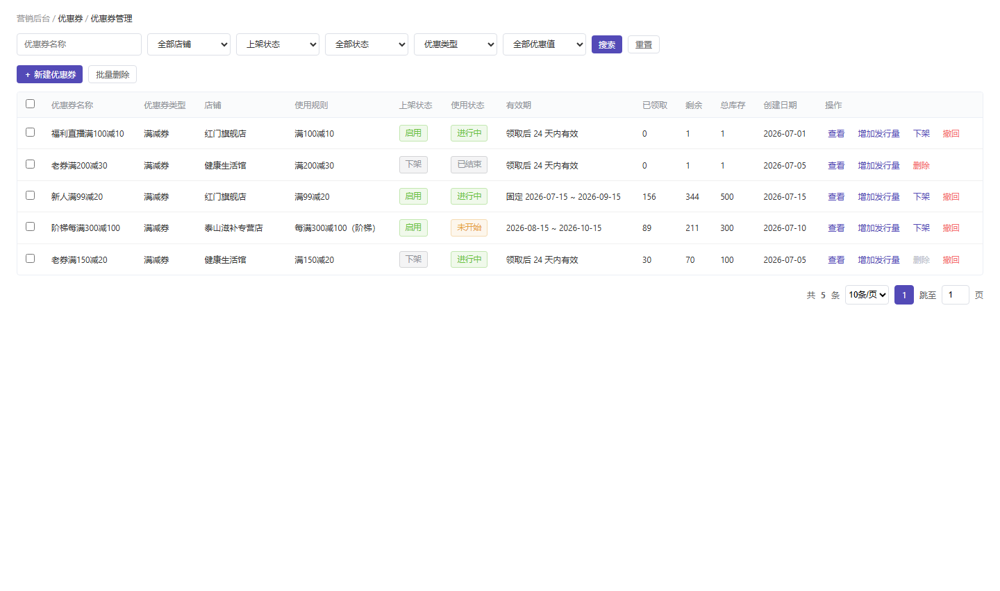
4.1.1 P1 优惠券管理列表 已有-沿用
沿用现有功能，本期删除「已领取」「剩余」「总库存」列及「增加发行量」操作；券模板不再配置发行量与每人领取量，仅保留创建日期列与下架/删除按钮逻辑。
列表字段表（字段名称 / 需求说明 / 备注）
| 字段名称 | 需求说明 | 备注 |
|---|---|---|
| 优惠券名称 | 券模板名称 | 取《券模板表》name |
| 优惠券类型 | 固定为「满减券」（一期仅此一种类型，见 §3.5） | 取 coupon_type；筛选器「优惠类型」下拉仅「满减券」一项 |
| 店铺 | 所属店铺名 | 平台端可跨店 |
| 使用规则 | 券面额/门槛摘要（如"满99减20"） | 取规则字段拼接 |
| 上架状态 | 启用 / 下架 | 取 listing_status 枚举 |
| 使用状态 | 未开始 / 进行中 / 已结束 / 已删除 | 系统根据有效期自动计算，或运营在「撤回管理」页手动撤回（与上架状态独立，详见 §3.4 状态机） |
| 有效期 | 固定时间段 / 领取后生效天数 | 取 time_type + 对应值 |
| 创建日期 | 券模板创建日期 | 取《券模板表》create_time |
| 关联活动数 | 统计《发券活动表》中「关联券模板 = 当前券模板」的发券活动数量（即有多少发券活动挂了这张券）；取 COUNT(*) FROM 发券活动-券关联表 WHERE coupon_template_id=当前券 | 仅展示数字，不参与排序/筛选；统计口径含未开始/进行中/已结束全部状态；下架某券时若该值＞0 则提示「该券正被 N 个发券活动引用」 |
功能按钮（操作列）
| 按钮 | 显示条件 | 功能说明 | 权限 |
|---|---|---|---|
| 查看 | 所有状态 | 进入 D1 券详情 | 直播运营 |
| 复制 | 所有状态 | 点击「复制」→ 打开 D2 新建优惠券页，并将源券的可带入信息（名称[自动追加「-副本」后缀]、有效时间、店铺、券规则、可共用优惠、商品选择、可使用端口、券规则说明）代入表单，用户修改后提交即生成一张全新券模板：不继承源券的上下架状态 / 领取数据 / 券码，按 D2 既有逻辑创建（默认启用 / 进行中 / 新券码） | 直播运营 |
| 下架 | 上架状态=启用 | 点击「下架」→ 弹窗「下架优惠券」→ 必填下架原因（≤200字）→ 确定 → 将券置为「下架」状态（不可逆），列表即时刷新；仅影响发券活动可选性，不影响已发放用户券 | 直播运营 |
| 下架原因查看 | 上架状态=下架 且 存在下架原因 | 列表「上架状态」列中，下架态券的状态 Tag 旁展示「原因」链接；点击该链接弹出只读弹窗展示完整下架原因（≤200字，保留换行）；启用态不展示该链接。下架原因在下架时由弹窗必填录入并随券模板持久化存储，供运营事后追溯 | 直播运营 |
| 删除 | 上架状态=下架 且 无关联发券活动 | 从列表删除该券（需二次 confirm 确认）；存在关联发券活动的券不展示「删除」入口（置灰禁用并提示"存在 N 个关联发券活动，不可删除"），须先结束相关发券活动后删除入口才可用；删除不影响已发放用户券实例的使用 | 直播运营 |
⚠️ 沿用既有设计：启用态券只能「下架」不能直接删除；下架后变为「删除」入口。下架入口仅置于 P1 列表操作列（不在 D1 券详情页），便于运营在列表中统一管理券生命周期。「撤回」入口已从券列表移出，改为独立的「撤回管理」页（见 §10.9）。在撤回管理页执行撤回时，券模板使用状态将被置为「已结束」，同时物理删除该模板下「未使用」的用户券实例；已使用/已过期实例保留，其他用户不受影响。
本期删除说明：券模板不再维护发行量/总库存/剩余库存，也不再提供「增加发行量」操作。
4.1.2 D1 券详情
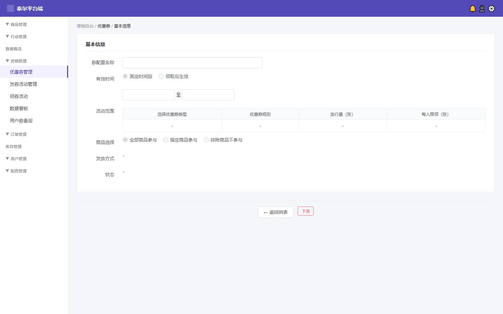
平台端当前无独立券详情页，本期新建。从 P1 列表点击「查看」进入。
页面字段表
| 字段/区域 | 需求说明 | 备注 |
|---|---|---|
| 券配置名称 | 文本只读，显示券模板名称 | 取《券模板表》name |
| 券编码提示 | 名称旁显示券编码（hint 文字） | 取 template_code |
| 有效时间类型 | Radio 只读：固定时间段 / 领取后生效 | 取 time_type |
| 固定时间段 | 日期范围：开始时间 ~ 结束时间，只读 | time_type=fixed 时显示；取 start_time/end_time |
| 领取后有效天数 | 数字只读：X 天内有效 | time_type=after 时显示；取 valid_days |
| 优惠规则设置 | 内嵌表格：适用店铺 / 优惠券类型 / 优惠券规则 / 优惠规则 / 叠加次数 / 最大优惠金额（后两列仅在叠加优惠时展示；最大优惠金额 = 减Y元 × 叠加次数，自动计算） | 取关联规则配置（详见 §4.1.3.3） |
| 商品选择 | Radio 只读：全部商品参与 / 指定商品参与 / 排除商品不参与 | 取 product_scope |
| 发放方式 | 文本只读，显示发放渠道（如"直播时长发券"） | 取 issue_mode |
| 可共用优惠 | 只读展示已勾选项（臻享积分 / 多盒多折 / 可多张使用，多项以「、」连接）；一项都没勾选时展示「不共用」 | 取 share_with 多值字段（详见 4.1.3.2） |
| 优惠规则 | 只读展示：优惠规则（单个优惠 / 叠加优惠）、叠加次数、最大优惠金额 分三列展示；最大优惠金额 = 减Y元 × 叠加次数，系统自动计算 | 取 disc_rule / stack_times / max_amt（详见 4.1.3.3） |
| 状态 | 上架状态 Tag 显示（启用/下架）；使用状态 Tag 显示（未开始/进行中/已结束/已删除） | 取 listing_status + usage_status 枚举（双维度独立，详见 §3.4） |
| 券规则说明 | 只读富文本展示区，渲染该券模板保存的「券规则说明」HTML（文本 + 图片）；内容为空时显示「—」 | 取《券模板表》rule_desc（详见 4.1.3 表单字段表） |
4.1.3.4 「底价（商品级）」字段规则
字段定义：底价是商品级属性，由运营在券配置的「商品选择区」环节，对每个适用商品逐行录入该商品允许成交的最低实付单价。它约束的是 C 端结算时「叠加/用券后该商品实付不得低于底价」，与券面额、门槛、可共用优惠、叠加计算相互独立。
录入与存储：
- 来源：运营在券配置中手动录入（以后台原型为准，非商品域接口只读）。原型中每个已选商品行带「底价 ¥」数字输入框（min=0，step=0.01，默认留空）。
- 字段：存《券模板表》适用商品集合的
floor_price；空值 / 0.00 = 无底价（即不限制），C 端该商品不做底价不击穿校验。 - 校验：≥0 数值；可留空；不强制必填。
C 端「严格不击穿底价」保护规则（本期实现）：
- 生效位置：在订单详情页结算计算时生效（与 §4.3.6 选券联动），后端在下单/核销接口二次校验，前后端规则一致。
- 计算顺序：多盒多折（商品级）→ 臻享积分抵现（支付级，作用于多盒多折后实付）→ 优惠券满减（订单级，最后计算）。底价不击穿在「优惠券满减」步骤后、逐商品核算实付时触发。
- 保护逻辑：逐商品校验「该商品结算实付单价 ≥ 其 floor_price」；若减免后实付 < 底价，则回退该商品对应的优惠减免至刚好触底（该商品实付 = 底价），其余商品不受影响，不整体取消券。
- 极端兜底：若回退后仍无法满足（如单商品订单券面额超过「原价 − 底价」），则该券对当前订单不可用，订单详情页置灰并提示「该商品触发底价不击穿，本券不可用」。
- 前端展示：订单详情页实时计算并显示本单实际减免金额；触底回退时展示触底提示，减免金额随之更新。
- 计算基数：底价不击穿仅作用于该券适用商品范围内的商品实付单价；不含赠品 / 换购商品金额（用户裁定：当前赠品不影响指定券的 SKU，与 §4.1.3.3 叠加计算基数口径一致）。
功能按钮
| 按钮 | 功能说明 | 权限 | 前置条件 |
|---|---|---|---|
| ← 返回列表 | 返回 P1 优惠券管理列表 | 所有角色 | — |
| 下架 | 点击「下架」→ 弹窗「下架优惠券」→ 必填下架原因（≤200字）→ 确定 → 将当前券置为「下架」状态（不可逆）；仅影响发券活动可选性，已发放用户券不受影响 | 直播运营 | 上架状态=启用 |
4.1.2.1 详细逻辑规则
界面与展示规则
- 入参校验：仅当从 P1 列表点击「查看」携带合法券ID进入；券ID不存在或已删除 → Toast「券不存在」并自动返回 P1 列表。
- 极限值处理：券名超 20 字截断加「…」；状态枚举未知值 → 显示「-」；有效期起止日期为空（领取后生效模式）→ 隐藏固定时间段行、仅显示「X 天内有效」。
业务逻辑与边界条件
- 未登录拦截：后台页面，需「直播运营」角色权限；无权限时 P1 列表不展示「查看」入口，直接 403 提示。
- 交互反馈：点击「下架」→ 弹窗「下架优惠券」→ 填写下架原因（必填，≤200字）→ 确定后接口置下架 → 列表与详情页状态 Tag 即时刷新 → Toast「已下架」。
- 按钮状态切换逻辑（由后端 status 实时判断）：上架状态=启用 → 显示「下架」可点；上架状态=下架 → 隐藏「下架」按钮（仅保留「返回列表」）。
- 防刷控制：下架为破坏性操作，确认弹窗未点确认前不发起请求；防止连续点击造成重复下架。
4.1.3 D2 新建优惠券
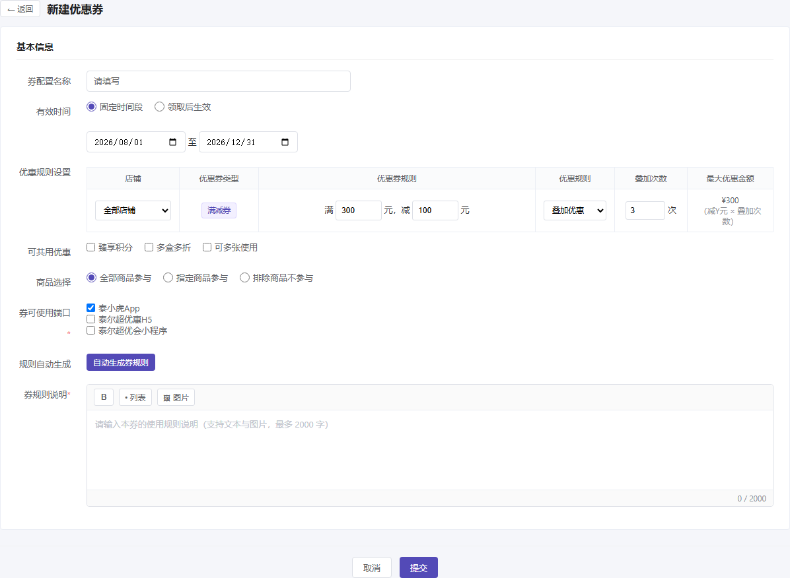
平台端当前无制券能力，本期新建。平台端 D2 含「**店铺选择**」列（可指定全部或某商家店铺）。
D2 表单字段表
| 字段 | 控件类型 | 需求说明 | 校验规则 | 备注 |
|---|---|---|---|---|
| 券配置名称 | 文本输入 | 必填，内部识别用，不展示给用户 | 空→"请填写名称"；≤50 字符 | hint: "该配置名称不展示给用户仅作内部识别用" |
| 有效时间类型 | Radio 2 选 1 | 固定时间段 / 领取后生效 | 必选其一 | 切换时联动下方字段显隐 |
| 固定时间段 | 日期范围 | 开始时间 ~ 结束时间 | 结束时间 > 开始时间；结束时间 > 当前时间 | time_type=fixed 时显示 |
| 领取后有效天数 | 数字输入 | X 天内有效 | ≥1 整数；默认 24 | time_type=after 时显示 |
| 店铺 | 下拉选择 | 全部店铺 / 指定店铺（单选） | 必选 | ⚠️ 平台端独有字段 |
| 优惠券类型 | 只读 Tag（非下拉） | 固定展示「满减券」，不可选择 | — | 本期改动 一期仅满减券，下拉已删除（见 §3.5 / §十一） |
| 优惠券规则 | 两个数字输入框 | 「满 X 元，减 Y 元」 | X、Y 均必填且为 >0 的数值；Y < X（减免金额需小于门槛金额，否则提示「减免金额需小于门槛金额」）；X 空 → 「请填写满减门槛金额」；Y 空 → 「请填写减免金额」 | cpFullAmt / cpCutAmt |
| 可共用优惠 | 多选 Checkbox（3 项） | 臻享积分 / 多盒多折 / 可多张使用，可多选、可全不选。其中「臻享积分」「多盒多折」为已有功能，仅表示本券可与之叠加（规则不赘述）；「可多张使用」含义特殊：允许同一用户在同一订单中同时使用多张本券模板的券（非与其他类型优惠叠加，券模板不再配置每人领取上限，其叠加张数上限另行确认） | 默认全部不选中；无必填校验，允许 0 选 | 本期改动 原「是否与其他优惠共用」Radio 二选一改造而来，字段名与控件同步变更；原「同名券」更名为「可多张使用」（见 §4.1.3.2 枚举定义） |
| 优惠规则 | 下拉选择（单个优惠 / 叠加优惠），同一字段的两个互斥选项；选「叠加优惠」时独立展示「叠加次数」输入列与「最大优惠金额」只读展示列 | 单个优惠：订单满 X 元减 Y 元，只减一次（等价于原「不勾选阶梯」）。叠加优惠：按「每满 X 减 Y」循环叠加，减免金额 = floor(订单可用商品金额 ÷ X) × Y；最大优惠金额 = 减Y元 × 叠加次数，系统自动计算并展示（详见 4.1.3.3） | 默认「单个优惠」；选「叠加优惠」时「叠加次数」默认 1（最小 1），「最大优惠金额」按 减Y元×叠加次数 自动计算、只读展示；X、Y 未填写完整时提交提示「请先填写完整的满减规则」 | 本期新增 由「优惠规则设置」区块承载，替代原「阶梯优惠券」开关 + 「阶梯上限」字段 |
| 商品选择 | Radio 3 选 1 | 全部商品参与 / 指定商品参与 / 排除商品不参与 | 必选其一 | 选"指定/排除"时展开商品选择区 |
| 商品选择区 | 弹窗+标签列表 | 打开商品选择弹窗 → 搜索/筛选/分页勾选 → 已选商品以 chip 标签展示可删除 | 指定/排除模式至少选 1 件 | 弹窗含分类筛选+价格筛选+关键词搜索+分页 |
| 底价（商品级） | 数字输入（每个适用商品一行） | 在「商品选择区」勾选的每个适用商品旁可录入该商品底价（指定商品时逐行设置）；底价 = 该商品允许成交的最低实付单价，叠加/用券后实付不得低于此值；默认留空 = 无底价（即不限制） | ≥0 数值，min=0，step=0.01；可留空 = 无底价（不强制必填） | 本期新增 数据来源=运营在券配置中录入（以原型为准，非商品域只读）；存《券模板表》适用商品的 floor_price 字段；C 端用券结算时按本值做「不击穿底价」保护（详见 §4.1.3.4 / §4.3.6） |
| 券可使用端口 | 多选 Checkbox（3 项） | 泰小虎App / 泰尔超优惠H5 / 泰尔超优会小程序，可多选，每个端口为独立投放渠道 | 必选至少 1 项；全不选 → 提交时提示「请至少选择一个可使用端口」；默认勾选「泰小虎App」 | 数据来源=运营在券配置中勾选；存《券模板表》usable_ports（数组）；发券投放（发券活动/系统发券）仅向 usable_ports 内端口投放，用户不可跨端口领取；用户已持有的券跨端口统一展示——若当前端口不在该券 usable_ports 内，状态标「生效中」但不可选，点击提示「此券仅支持在 {usable_ports 端口名称} 使用」（详见 §4.3.5） |
| 券规则说明 | 富文本编辑器（contenteditable） | 录入本券的使用规则说明，支持纯文本 + 图片（图片以 URL 或 base64 内嵌）；每个券模板独立维护自己的规则说明，互不影响 | 必填；纯文本（去除 HTML 标签后）长度 ≤ 2000 字；为空 → 提示「请填写券规则说明」；超长 → 实时截断并提示「券规则说明最多 2000 字」 | rule_desc（HTML 富文本，存《券模板表》） |
功能按钮
| 按钮 | 功能说明 | 权限 | 前置条件 | 逐步操作逻辑 |
|---|---|---|---|---|
| 取消 | 放弃当前填写，返回 P1 列表 | 所有角色 | — | 点击 → 若有已填内容 → 弹确认"确定放弃？填写内容不会保存" → 确认返回 / 取消留页 |
| 提交（新建） | 创建新券模板，写入《券模板表》 | 直播运营 | 所有必填项通过校验 | ① 前端逐字段校验（见上表校验规则）→ 不通过则对应字段标红+提示文案 ② 全部通过 → 调 POST /coupon/template → 成功后跳转 P1 列表并 Toast"创建成功" ③ 失败 → 接口报错文案 Toast 展示 |
数据来源：店铺下拉取《店铺表》；商品弹窗取《商品中心·商品表》；提交写《券模板表》（/coupon/template CRUD）。
4.1.3.1 详细逻辑规则
界面与展示规则
- 入参校验：所有必填项（券配置名称 / 有效时间类型 / 店铺 / 满减规则 X 与 Y / 商品选择 / 券可使用端口 / 券规则说明）通过才允许提交；未通过字段标红 + 提示文案（见 D2 表单字段表校验规则列）。发行量 / 每人领取已从券模板配置中移除，不再校验。优惠券类型固定为「满减券」只读展示，无需选择、无校验。券可使用端口为必选至少 1 项，全不选 → 提示「请至少选择一个可使用端口」；券规则说明为富文本必填，纯文本 ≤2000 字，为空 → 提示「请填写券规则说明」。
- 极限值处理：券配置名称 ≤50 字符（超长截断+提示）；商品选择「指定/排除」模式至少选 1 件（0 件 → 提示「请至少选择 1 件商品」）。发行量 / 每人领取已删除，相关校验同步移除。
业务逻辑与边界条件
- 未登录拦截：后台页面，需「直播运营」角色；无权限时入口不展示（同 P1）。
- 交互反馈：提交成功 → Toast「创建成功」并跳转 P1 列表；接口报错 → Toast 展示后端错误文案；取消且有已填内容 → 二次确认「确定放弃？填写内容不会保存」。
- 防刷控制：提交中按钮进入 loading 态，防止网络延迟下重复提交造成重复建券；建券成功后前端用返回券ID 去重，避免重复落库。
- 券规则说明存储：富文本内容以 HTML 原样写入《券模板表》
rule_desc字段（图片以 base64 或 URL 内嵌）；纯文本长度 ≤2000 字，超出前端实时截断并提示；该字段为券模板级、必填，每个券独立维护自己的规则说明，互不影响。
4.1.3.2 「可共用优惠」字段规则
字段定义：原「是否与其他优惠共用」（Radio 二选一：是/否）改造为「可共用优惠」（多选 Checkbox），从「一刀切开关」升级为「按优惠类型逐项授权」。
| 枚举值 | 建议编码 | 含义（勾选后） |
|---|---|---|
| 臻享积分 | ZHENXIANG_POINTS | 已有功能：本券可与「臻享积分抵现」在同一订单叠加（C 端具体核销方案见 §4.3.6.9） |
| 多盒多折 | MULTI_BOX | 已有功能：本券可与商品「多盒多折」促销叠加（C 端具体核销方案见 §4.3.6.9） |
| 可多张使用 | SAME_COUPON | 允许同一用户在同一订单中同时使用多张本券模板的券（叠加张数上限由发券活动配置控制，券模板不设上限）；与「跨类型优惠叠加」性质不同——它不表示与其他优惠类型并存，而表示同一款券可叠加多张使用 |
业务规则
- 默认值：新建券时三项全部不勾选，即该券为「独占型」——下单时若已选用其他优惠（臻享积分/多盒多折/可多张使用），本券置灰不可选，并提示「该券不可与已选优惠同时使用」。
- 互斥判定时机：在 C 端订单详情页选券时实时判定；后端在下单接口再次校验，前后端规则一致，防止绕过。
- 优惠叠加顺序：多盒多折（商品级）→ 臻享积分抵现（支付级，作用于多盒多折后实付）→ 优惠券满减（订单级，最后计算）。勾选项决定「是否允许并存」，不改变上述计算顺序；券为最后一道优惠，其门槛与减免均基于「多盒多折 + 积分抵扣后」金额计算。
- 优惠券满减的计算层级（订单级 / SKU 行级）：取决于券的适用范围——① 适用范围=「全部商品参与」「排除商品不参与」的券，减免作用于订单总价（订单级）；② 适用范围=「指定商品参与」的券（单 SKU / 指定 SKU 券），减免作用于对应 SKU 行（SKU 行级，不作用于订单）。SKU 行级券的门槛 X 判定与减免 Y 计算均只针对该 SKU 行的实付金额，与其余商品无关（详见 §4.3.6 C 端表现）。
- 枚举扩展：后续如新增可共用优惠类型（如「运费券」「会员折扣」），按字典表追加枚举值即可，前端下拉/多选项自动读取字典，无需改代码。
- 券模板「每人领取」字段已删除，「可多张使用」的叠加张数上限交由发券活动控制（券模板不再设上限字段）。
4.1.3.3 「优惠规则」计算逻辑（单个优惠 / 叠加优惠）本期新增
功能说明：满减券通过「优惠规则」下拉选择计算方式：单个优惠——订单满 X 元减 Y 元，只减一次；叠加优惠——订单金额每满一个 X，就多减一份 Y，减免金额随订单金额阶梯式增长，最大优惠金额由系统按「减Y元 × 叠加次数」自动计算并展示。
计算公式
| 项 | 公式 / 说明 |
|---|---|
| 叠加档数 n | n = min( floor(订单可用商品金额 ÷ X), 叠加次数 )（向下取整后与「叠加次数」取小；叠加次数即本券最多循环叠加的次数，订单金额达到 叠加次数 × X 后不再叠加） |
| 减免金额 | 减免 = n × Y |
| 最大优惠金额 | 最大优惠金额 = 减Y元 × 叠加次数，由系统根据当前填写的「减Y元」与「叠加次数」自动计算并展示，运营侧不再单独录入封顶金额。最大优惠金额仅作展示与封顶提示，不改变计算顺序（多盒多折 → 臻享积分抵现 → 优惠券满减）。 |
| 计算基数 | 「订单可用商品金额」= 本券适用商品范围内的商品，经多盒多折、臻享积分抵扣后的剩余实付金额合计（不含运费）。券为最后一道优惠，其门槛判定与减免计算均基于此「积分抵扣后」金额。指定商品券时该合计即单个 SKU 行金额，作用于 SKU 行级，不作用于订单总价。 |
| 封顶规则 | 减免金额 不得超过订单可用商品金额；超出时按订单可用商品金额封顶（订单实付不为负） |
| 单个优惠模式 | 减 Y 元，只减一次（n 恒为 1） |
数据演练（以「满 300 减 100，叠加 3 次，最大优惠 ¥300」为例）
| 订单可用商品金额 | 单个优惠 | 叠加优惠（最大优惠¥300） | 叠加计算过程 |
|---|---|---|---|
| ¥ 280 | 不满足门槛，减 ¥0 | 减 ¥0 | floor(280÷300)=0 → 0×100=0 |
| ¥ 300 | 减 ¥100 | 减 ¥100 | floor(300÷300)=1 → 1×100=100 |
| ¥ 599 | 减 ¥100 | 减 ¥100 | floor(599÷300)=1 → 1×100=100 |
| ¥ 600 | 减 ¥100 | 减 ¥200 | floor(600÷300)=2 → 2×100=200 |
| ¥ 900 | 减 ¥100 | 减 ¥300（封顶） | floor(900÷300)=3 → 3×100=300 |
业务规则与边界
- 优惠规则（本期新增）：
- 单个优惠：订单满 X 减 Y，只减一次，与原「不勾选阶梯」行为一致。
- 叠加优惠：按「每满 X 减 Y」循环叠加；叠加次数默认 1（最小 1，可与单个优惠等效），控制本券最多循环叠加次数。
- 最大优惠金额（自动计算展示）：叠加优惠模式下，「优惠规则设置」表独立展示「最大优惠金额」列，系统按 减Y元 × 叠加次数 自动计算并只读展示，运营侧不再单独录入封顶金额。
- 与「可多张使用」独立：优惠规则控制本券自身的减免计算方式；「可多张使用」控制同一订单中可叠加使用的张数，两者不互通。
- 默认值：新建券时「优惠规则」默认单个优惠，保持与存量券行为一致。
- 后台交互：选「叠加优惠」后须完整填写 X、Y，任一缺失提交时提示「请先填写完整的『满 X 元，减 Y 元』规则」；「最大优惠金额」由系统根据 X、Y 与叠加次数自动计算，无需运营填写。
- C 端展示文案：叠加券在券包/订单详情页的面额区展示为「每满 X 减 Y」（单个优惠为「满 X 减 Y」），券卡片右下角追加小字「可叠加」；订单详情页选中后实时显示本单实际减免金额与封顶上限。
- 与「可共用优惠」的关系：两者互相独立——「优惠规则」控制本券自身的减免计算方式；「可共用优惠」控制本券与其他优惠能否并存。叠加券同样受可共用优惠约束。
- 与「可多张使用」叠加：若同时选「叠加优惠」+「可多张使用」，多张同名叠加券的减免分别独立计算后相加，总减免仍受订单可用商品金额封顶约束。
4.1.4 P2 发券活动管理列表 + D3 发券活动（规则引擎）本期新增
P2 发券活动管理列表
📌 本截图已于 2026-08-07 替换：原 P2 发券活动管理列表截图与当前原型/PRD 说明不一致（旧图未体现「发放端口」「新人福利活动」等迭代字段），已按最新原型重新截取。
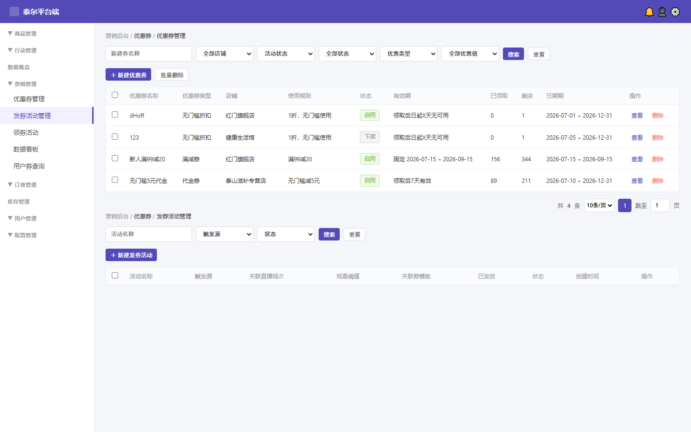
列表字段与筛选：在既有字段（活动名称 / 触发源 / 关联券模板 / 每人上限 / 活动时间（含开始时间、关闭时间） / 状态）基础上，新增「开始时间」「结束时间」两列（取 start_time / end_time，长期活动结束时间为「—」）；列表顶部筛选区维持「触发源 / 状态 / 关键词」。
P2 列表字段表
| 字段 | 需求说明 | 备注 |
|---|---|---|
| 勾选框 | 多选，用于批量操作 | — |
| 活动名称 | 发券活动名称（文本） | 取《发券活动表》name |
| 触发源 | 触发来源类型展示（如「直播时长」「分享活动」「新人福利活动」） | 取 trigger 字段；本期支持直播时长 / 分享活动 / 新人福利活动三种触发源，列表触发源列直接展示类型 |
| 观看阈值/条件 | 触发条件的文本描述（如「观看满30分钟」） | 取 threshold_text（由触发源+阈值数值组合生成，见 D3 表单） |
| 关联券模板 | 本活动关联的券模板名称列表（多行展示） | 取关联关系表，多券时换行显示 |
| 已发放 | 已发放的券实例总数 | 聚合《用户券表》count(where activity_id) |
| 状态 | 活动状态 Tag（草稿 / 未开始 / 进行中 / 已结束） | 取 status 枚举；草稿=灰色Tag、进行中=绿色Tag、未开始=蓝色Tag、已结束=灰色Tag |
| 活动时间 | 活动起止时间（含开始时间、关闭时间） | 取 start_time ~ end_time（datetime-local 控件，精度到分钟） |
| 开始时间 | 活动开始时间（datetime-local，精度到分钟） | 取 start_time；长期活动仅展示开始时间（end_time 为空） |
| 结束时间 | 活动关闭时间（datetime-local，精度到分钟） | 取 end_time；未勾选长期活动时必填，勾选长期活动时为「—」（即空，不随关闭时间自动结束） |
| 操作 | 操作列按钮（见下方功能按钮表） | — |
P2 筛选条件表
| 筛选条件 | 控件类型 | 查询说明 |
|---|---|---|
| 关键词 | 文本输入 | 支持按「活动名称」模糊搜索；空=不筛选 |
| 触发源 | 下拉单选 | 全部 / 直播时长 / 分享活动 / 新人福利活动；默认「全部」 |
| 状态 | 下拉单选 | 全部 / 草稿 / 未开始 / 进行中 / 已结束；默认「全部」 |
P2 功能按钮（操作列 + 全局按钮）
| 按钮 | 位置 | 显示条件 | 功能说明 | 权限 |
|---|---|---|---|---|
| ＋ 新建发券活动 | 列表顶部工具栏右侧 | 始终可见 | 跳转 D3 新建页（标题「新建发券活动」，表单空白） | 直播运营 |
| 搜索 | 筛选区 | 始终可见 | 按当前筛选条件刷新列表 | 所有角色 |
| 重置 | 筛选区 | 始终可见 | 清空所有筛选条件并刷新列表（恢复默认「全部」状态） | 所有角色 |
| 编辑 | 列表操作列 | 仅「草稿 / 未开始 / 进行中」态可见可点击；「已结束」态不显示该按钮 | 跳转 D3 编辑页（标题切换为「编辑发券活动」，表单回填当前活动数据）；仅「未开始」态的活动可保存修改，进行中态进入编辑页后「保存」按钮禁用或隐藏（或前端拦截提示"进行中的活动不可编辑"）；草稿态可编辑（保存后仍为草稿，须「上架」才进入生命周期）；已结束态不显示编辑入口（已结束为终态不可编辑，改由「删除」按钮清理） | 直播运营 |
| 上架 | 列表操作列 | 仅「草稿」态可见可点击；「未开始 / 进行中 / 已结束」态不显示该按钮 | 二次确认弹窗「确认上架该发券活动？将根据活动时间进入『未开始 / 进行中 / 已结束』状态」→ 确认后按活动时间判定目标态（now＜开始→未开始；开始≤now≤关闭→进行中；now＞关闭→已结束；长期活动 endTime 为空按开始时间判定）并刷新列表；上架后活动进入生命周期开始计时 | 直播运营 |
| 结束活动 | 列表操作列 | 仅「未开始 / 进行中」态可见可点击；「草稿 / 已结束」态不显示该按钮（草稿不触发发券，无需结束） | 二次确认弹窗「确认结束该发券活动？结束后立即停止发券且不可重新开启」→ 确认后状态置为「已结束」（终态，不可重开）；立即停止发券（未发放的关联券不再发放），已发放到用户钱包的券实例不受影响（仍可按其使用状态正常使用）；「结束活动」是终止发券活动的唯一入口，记录保留为终态可复盘 | 直播运营 |
| 删除 | 列表操作列 | 仅「已结束 / 草稿」态可见可点击；「未开始 / 进行中」态不显示该按钮 | 二次确认弹窗：草稿态提示「确认删除该草稿发券活动（放弃草稿，无发放记录）？」，已结束态提示「确认删除该发券活动？删除后不可恢复」→ 确认后物理 / 逻辑删除活动记录（不可恢复）；已发放到用户钱包的券实例不受影响（券独立于活动存在，仍可按其使用状态正常使用）；草稿删除=放弃草稿（无发放记录），已结束删除为终态清理动作，未开始 / 进行中活动不支持删除（须先「结束活动」转为已结束后方可删除） | 直播运营 |
D3 新建/编辑发券活动（规则引擎）
D3 新建/编辑发券活动（规则引擎）
📌 本截图已于 2026-08-07 替换：原 D3 新建/编辑发券活动截图缺少「活动类型=新人福利/分享」「选择直播发券状态」「发放端口=App/H5/小程序」等迭代字段，已按最新原型重新截取。
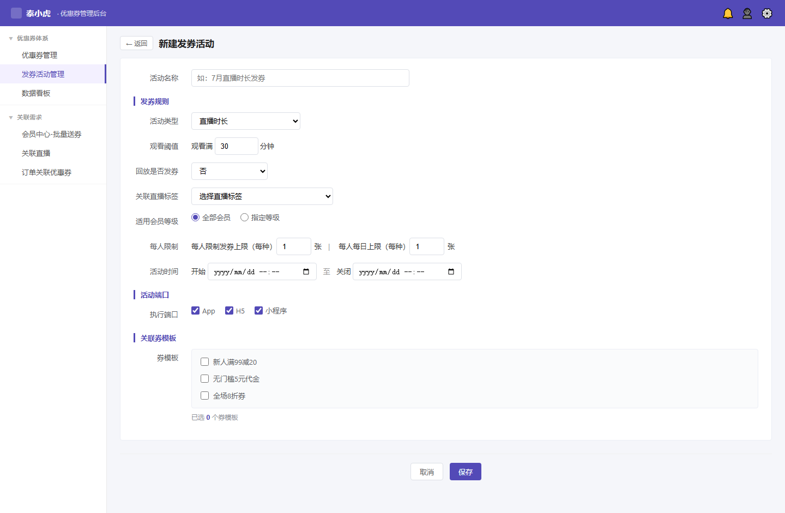
D3 表单字段（规则引擎）
| 字段 | 逻辑说明 | 校验规则（新增/编辑通用） | 备注 |
|---|---|---|---|
| 活动名称 | 文本输入 | 必填；空→提示"请填写活动名称"；≤50 字符（超长截断并提示） | — |
| 触发源 | 下拉单选（直播时长 / 分享活动 / 新人福利活动），默认「直播时长」；选择后表单动态显隐对应阈值字段 | 必选 1；切换活动类型即时联动下方字段 | 本期支持 3 种触发源 |
| 观看阈值 | 仅当触发源=直播时长时显示：观看满 X 分钟（min=1）；分享活动 / 新人福利活动不展示本字段（无观看阈值） | 直播时长活动时必填≥1 整数 | 阈值文本见原型 D3 表单（snThresholdText） |
| 选择直播发券状态 | 仅当触发源=直播时长时显示：多选勾选（预告 / 直播中 / 回放，默认勾选「直播中」，必选≥1 项）；勾选的状态，对应用户在该直播状态下的累计观看时长达到「观看阈值」即发券（各状态复用同一观看阈值、分开计时、可分别发券）。勾选全部=对三种直播状态都发券 | 直播时长活动时必选≥1 项，否则保存拦截提示"请至少选择一个直播发券状态"；默认勾选「直播中」 | 按状态发券能力详见 4.1.4.2；各状态观看时长以直播观看记录表的「观看时直播状态=预告/直播中/回放」明细为准 |
| 绑定用户数量 | 仅当触发源=分享活动时显示：绑定用户数量每满 X 人（可重复发） | 分享活动时必填≥1 整数 | — |
| 每人限制发券上限（每种） | 数字输入，默认 1；多选券模板时每种独立限张；可留空 | 选填；留空=不限制（该用户对该券模板累计发放张数无上限）；填写时须为 ≥1 整数，非法（0/负数/非数字）→提示"每人上限须≥1"；最大 999 | 呼应 v9.2 文案；原型输入框按现状（min=1、默认1），留空上限由后端逻辑兜底处理 |
| 每人每日上限（每种） | 数字输入；按「自然日 00:00~24:00」重置，每个用户对每种关联券模板当日累计发放张数上限 | 默认 1，≥1 整数；非法（0/负数/非数字）→提示"每人每日上限须≥1"；最大 999；与「每人限制发券上限」独立——前者控制日累计，后者控制活动总累计 | — |
| 活动时间 | 两段时间：开始时间（datetime-local 控件，精度到分钟）+ 关闭时间（datetime-local 控件，精度到分钟），同一表单行内联展示，中间以「至」字分隔；勾选「长期活动」后仅开始时间必填，关闭时间隐藏且非必填 | 未勾选长期活动时两段皆必填；任一空→提示"请选择活动时间"；开始时间＜关闭时间，否则提示"开始时间须早于关闭时间"；勾选长期活动后仅开始时间必填，关闭时间隐藏、非必填、写库时置空，活动不随关闭时间自动结束，须运营「结束活动」手动终止 | 异步发券，无冷却/生效时段；未勾选长期活动时到达关闭时间后由系统定时任务自动置为「已结束」停止发券，亦可经运营「结束活动」手动提前终止；长期活动须运营手动「结束活动」终止；活动生命周期为「开始时间 ≤ 当前 ＜ 关闭时间」；已发放的券实例不受活动终止影响 |
| 长期活动 | 复选框，与「活动时间」同一表单区域；勾选后活动长期有效 | 选填；勾选=长期活动（仅需开始时间，关闭时间隐藏置空，不随关闭时间自动结束）；不勾选=按开始+关闭时间正常生效 | 本期新增；P2 列表「活动时间」列长期活动仅展示开始时间（end_time 为空） |
| 关联券模板 | 页面内可勾选（多选），实时显示已选数 | 至少 1 个；空→提示"请至少关联一个券模板"；最多 20 个 | — |
| 活动发放上限（每券模板） | 「关联券模板」列表中每个券模板行常驻一个数字输入框（无单独勾选开关），单位「张」；仅当该券模板被勾选加入活动时输入框可编辑，未勾选时置灰不可填并清空已填值 | 选填；留空 = 该券模板在本活动内发放数量不限；填写须为 1-999999999 的正整数，非法（0 / 负数 / 非数字）→提示"活动发放上限须为 1-999999999 的正整数"；活动期间该券模板在本活动内累计发放张数达上限后，本活动不再发放该券模板 | 按券模板独立控制；与「每人限制发券上限」「每人每日上限」相互独立叠加——先判活动级总量上限，再判用户级上限 |
| 发放端口 | 复选框组，可选：App / H5 / 小程序；默认三项全勾选 | 至少勾选 1 个；空→提示"请至少选择一个发放端口" | 用于限制活动的发券端口，用户只有在指定端口完成发券条件系统才会给用户发券；与券模板自身的「可使用端口」互为补充 |
活动类型 × 阈值绑定对照表（本期支持 3 种触发源）
| 活动类型 | 触发阈值（绑定） |
|---|---|
| 直播时长 | 观看满 X 分钟；支持按直播状态发券（在「选择直播发券状态」中勾选预告/直播中/回放，对应状态观看时长达阈值即发券，各状态分开记录、可分别发券） |
| 分享活动 | 绑定用户数量每满 X 人（可重复发） 发券对象=邀请人（用户邀请人=无→有 时给邀请人发券，详见 §4.1.3.3 分享活动发券场景；注：仅用户侧自然建立邀请关系触发，后台管理端手动变更导致的空→有 不触发发券） |
| 新人福利活动 | 无阈值（登录触发，自 2026-09-20 起生效） |
D3 功能按钮（表单操作按钮）
| 按钮 | 位置 | 显示条件 | 功能说明 | 权限 |
|---|---|---|---|---|
| 保存 | 表单底部右侧 | 始终可见 | 依次校验全部必填项（活动名称/观看阈值/每人上限（可留空=不限制）/活动时间（勾选长期活动则仅开始时间必填；未勾选时开始+关闭皆必填）/关联券模板≥1/发放端口≥1/已勾选券模板的「活动发放上限」（选填，留空=不限；填写须为 1-999999999 的正整数）；未勾选长期活动时开始时间＜关闭时间）→ 校验通过后写发券活动记录（触发源/阈值文本/等级/券模板/每人上限/开始时间 + 关闭时间/发放端口；勾选长期活动时关闭时间置空）→ toast"保存成功"并跳转 P2 列表页（新建时新记录置顶，编辑时原地刷新）；编辑模式下仅「未开始」态的活动可保存修改，进行中 / 已结束态进入编辑页后「保存」按钮 disabled 并 tooltip 提示"进行中/已结束的活动不可编辑"；保存中按钮 disabled + loading 文字"保存中..."防止重复提交；保存失败 → toast 显示后端错误信息 | 直播运营 |
| 取消 | 表单底部（保存按钮左侧） | 始终可见 | 未做任何表单修改时直接返回 P2 列表页；有修改但未保存时弹窗确认「当前修改尚未保存，确定离开吗？」（确认 / 取消两个按钮）→ 确认返回列表页 / 取消留在当前页继续编辑 | 所有角色 |
4.1.4.1 详细逻辑规则
界面与展示规则：
- 入参校验（P2 列表页）：触发源下拉筛选支持单选；时间范围为日期区间（开始~结束），空筛选条件默认查全部；列表无数据时显示空态"暂无发券活动"。
- 入参校验（D3 编辑页）：活动名称文本必填，空值→提示"请填写活动名称"；关联券模板至少勾选 1 个，空→提示"请至少关联一个券模板"；每人限制发券上限选填，留空=不限制（无累计上限）；填写时须为 ≥1 的数字输入，非法（0/负数/非数字）→提示"每人上限须≥1"；每人每日上限≥1 的数字输入（同上校验口径）；已勾选券模板的「活动发放上限」选填，留空=该券模板在本活动内不限发放量，填写须为 1-999999999 的正整数，非法（0 / 负数 / 非数字）→提示"活动发放上限须为 1-999999999 的正整数"；未勾选的券模板该输入框置灰不可填；活动时间：勾选「长期活动」时仅开始时间必填（关闭时间隐藏置空），未勾选时开始时间、关闭时间均须填且开始时间＜关闭时间；发放端口至少勾选 1 个，空→提示"请至少选择一个发放端口"。
- 极限值处理：活动名称最长 50 字符，超长截断并提示；每人上限最大值 999；活动发放上限最大值 999999999（输入超出自动截断为 999999999，且仅允许输入数字）；关联券模板最多勾选 20 个。
- 动态表单联动：选择活动类型后即时显隐对应字段——直播时长 → 显示「观看阈值」+「选择直播发券状态」；分享活动 → 显示「绑定用户数量」；新人福利活动 → 隐藏「观看阈值」；三类共用「每人限制发券上限」「每人每日上限」「活动时间」「关联券模板」「发放端口」。
业务逻辑与边界条件：
- 未登录拦截：平台端后台需登录且具备「直播运营」权限，无权限→403 提示"无权访问此模块"。
- 交互反馈：保存中按钮 disabled + loading 文字"保存中..."防止重复提交；保存成功→toast"保存成功"并刷新列表（新记录置顶）；保存失败→toast 显示后端错误信息。
- 按钮状态切换：「新建活动」始终可用；「编辑」仅对未开始 / 进行中的活动可点击（已结束态不显示编辑入口，终态不可编辑）；「结束活动」仅对未开始 / 进行中的活动可点击（已结束态不显示该按钮，终态不可重开）；「删除」仅对已结束的活动可点击（未开始 / 进行中态不显示删除入口，删除为终态清理动作、不可恢复）。
- 防刷控制：同一操作账号 2 秒内最多触发 1 次保存操作，超频→toast 提示"操作过于频繁，请稍后再试"。
- 数据一致性：结束发券活动时，已发放的券实例不受影响（券实例独立于活动存在）；编辑活动规则不影响已发放的历史券。
4.1.4.2 发券执行规则（本期：直播时长触发）
- 触发评估时机：直播时长发券为写死批量规则——取某时间段直播进入 / 退出时间 → 相减求时长 → 筛选超过「观看阈值」的用户列表 → 批量发券；按 user+活动+券模板 去重，防止同一用户重复发放。本期不做实时回调 / 定时轮询触发。
- 按直播状态发券（直播时长触发源 · 本期范围，不涉及火山 SaaS 直播配置）：触发源=直播时长时，系统按「选择直播发券状态」中勾选的直播状态（预告 / 直播中 / 回放，可多选、必选≥1 项）分别对该状态的观看时长单独计算——取直播观看记录表中该用户该场直播「观看时直播状态=对应状态」的进入 / 退出时间求时长，达到「观看阈值」即发放券。勾选多个状态时各状态分开判断、可分别发券、各记各的明细；同一用户对同一活动 + 同一券模板仍按 user+活动+券模板 去重，不重复发。
- 发放张数与累计上限（用户裁定）：每次触发为单用户每种关联券模板发放 1 张；活动生命周期内，单用户单券模板累计发放张数 ≤「每人限制发券上限」（默认 1，最大 999；上限留空=不限制，无累计上限），达上限后该券不再发放；引擎按 user+活动+券模板 去重控制。发放前先判活动级总量上限：若该券模板在本活动内累计已发放张数 ≥ 该券模板的「活动发放上限」，本次发放直接跳过（skipped）并记录跳过原因，再判上述用户级上限；「活动发放上限」留空则不做活动级拦截。
- 分享活动发券场景（无→有邀请人时给邀请人发券）：当触发源=分享活动时，引擎实时监听用户「邀请人」字段的状态变更——
- 触发条件：用户首次建立邀请关系，即该用户「邀请人」字段由「无」变为「有（具体邀请人 ID）」的瞬间，仅触发一次。
- 发券对象：邀请人（被绑定人的「邀请人」字段值），非被绑定人本人。
- 发券数量：给邀请人按活动关联的每种券模板发放 1 张；受「每人限制发券上限」+「每人每日上限」双重约束（两项上限留空=不限制）——活动期间同一邀请人对同一券模板累计已发张数（含本活动）≤「每人限制发券上限」；同一自然日内已发张数≤「每人每日上限」。
- 与绑定用户数量阈值的关系：本场景独立于"绑定用户数量每满 X 人"阈值——只要用户邀请人从无变有就触发；不要求达到"每满 X 人"门槛。
- 幂等与去重：同一用户对同一活动 + 同一券模板，本场景仅触发一次（邀请人字段一旦从无变有即写入历史，后续再变更邀请人不重复发券）。
- 特别说明 · 后台变更不触发发券：本场景仅当用户在前端业务链路中首次建立邀请关系（邀请人字段由「无」变为「有」）时触发给邀请人发券；若邀请人字段的「空→有」系由后台管理端手动变更（如运营在后台将某用户的邀请人由空改为有）导致，不触发本发券场景、不给邀请人发券。触发判定以「用户侧自然行为建立的邀请关系」为准，后台数据修正 / 手动补录不计入触发。
- 新人福利活动发券场景（用户登录时，未通过本活动领过新人福利券即触发）：当触发源=新人福利活动时，引擎在用户登录事件触发发券评估——
- 触发时机：自 2026-09-20 起，用户每次登录时评估；仅当用户「未通过本新人福利活动领取过新人福利券」时发券——无论新老用户，以是否本活动已发过券为准，而不以用户注册时间判断。
- 发券对象：登录用户本人（非邀请人）。
- 发券数量：按活动关联的每种券模板发放 1 张；受「每人限制发券上限」+「每人每日上限」双重约束（两项上限留空=不限制）。
- 幂等与去重：按 (user, activity_id, coupon_template_id) 去重——同一用户在同一活动对同一券模板仅发放一次（已领过的用户后续登录不再重复发券）。
- 关联券不可用跳过（基于现有规则补充）：发放前引擎对每张关联券模板做双维度校验，命中任一即跳过该券（其余关联券正常发放）并记发放日志（标记 skipped + 跳过原因）：①上架状态=「下架」（运营手动下架，见 §4.3）→ 该券本用户本期不再发放；②使用状态=「已结束 / 已删除」（自然过期、运营手动撤回，或券模板被运营删除）→ 该券本用户本期不再发放。命中任一后用户已持有的该券实例不受影响（仍可按其使用状态正常使用）。两条拦截互为兜底：上架状态校验覆盖「活动引用校验被绕过 / 时序窗口」等极端场景，使用状态校验覆盖券模板过期 / 撤回 / 删除场景。特别说明：进行中的发券活动，用户撤回优惠券，该活动停止发放对应优惠券——撤回将券模板使用状态置为「已结束」，引擎即跳过该券；已发放给该用户的券实例不受影响。
- 批量失败 / 重试：单用户发放失败不影响其他用户；失败重试策略 ⚠️ 待确认 @技术Owner（先按"整批重试"实现，开发期可调整）。
4.1.6 P4 数据看板
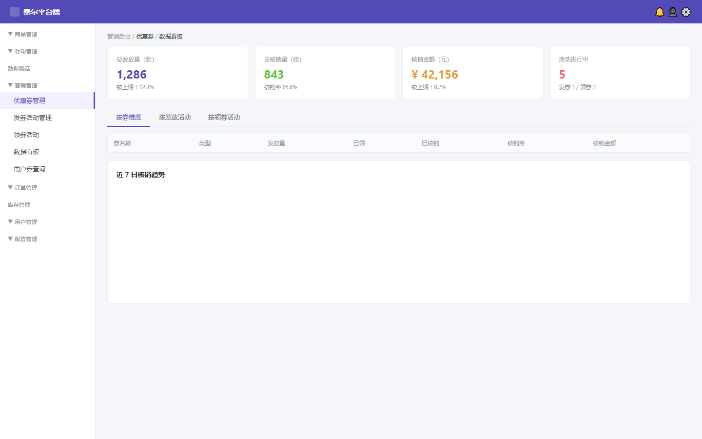
维度 Tab 第三项「券明细记录」（本期新增，评审第5点修订）：以券实例（券ID）为维度，每行一条发放明细，字段为券ID / 券名称 / 发放活动 / 是否发放 / 发放时间 / 接收用户 / 是否核销 / 核销订单号，每个字段均可独立查询（券ID / 券名称 / 接收用户 / 核销订单号支持输入模糊；发放活动为下拉单选；是否发放 / 是否核销为是/否下拉；发放时间为日期范围）。直播数据本期不做（关联需求，下期待规划）。
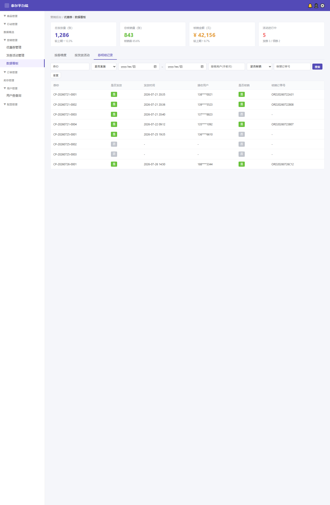
4.1.6.1 看板元素（字段名称 / 需求说明 / 备注）
| 字段名称 | 需求说明 | 备注 |
|---|---|---|
| 总核销量 | 统计 status=已使用 的券实例数 | — |
| 核销金额 | Σ 已使用券的实际核销减免金额（取核销时实扣额；叠加券取该笔订单循环减免后的实际抵扣额，非模板面值） | 合计行 |
| 活动进行中 | status=启用 且 now∈[开始,结束] 的活动数 | — |
| 近 7 日核销趋势 | 按天聚合核销数，SVG 折线 | 维度 Tab 切换 |
4.1.6.2 筛选条件（查询条件 / 查询说明）
| 查询条件 | 查询说明 |
|---|---|
| 维度 | 下拉单选：按券维度 / 按发放活动+券 / 券明细记录；默认按券维度。选「按发放活动+券」时下方展示按（活动, 券模板）维度的聚合表（每个活动下的每张券一行），字段与查询条件见 §4.1.6.4；选「券明细记录」时下方展示按券实例（券ID）维度的明细表，字段与查询条件见 §4.1.6.7（券明细记录字段表）。 |
| 时间范围 | 日期范围；默认近 7 日 |
4.1.6.3 按券维度列表字段表（「按券维度」Tab 主表格，每行一张券模板的聚合统计）
| 字段名称 | 聚合算法（计算公式） | 数据来源 | 排序 / 筛选支持 |
|---|---|---|---|
| 券名称 | 取《券模板表》coupon_name，按 coupon_template_id 分组 | 《券模板表》 | 支持文本模糊搜索 |
| 类型 | 取《券模板表》coupon_type（满减券 / 无门槛代金券等） | 《券模板表》 | 支持下拉筛选 |
| 已领取 | COUNT(《用户券表》WHERE coupon_template_id=当前券)，即该券模板已发放到用户钱包的实例总数（不再受发行量上限约束） | 《用户券表》 | 支持数值区间筛选 |
| 核销量 | COUNT(《用户券表》WHERE coupon_template_id=当前券 AND status='已使用')，即该券模板已被核销使用的实例数 | 《用户券表》 | 支持数值区间筛选 |
| 核销率 | 核销量 ÷ 已领取 × 100%（保留 1 位小数）；已领取=0 时显示"—" | 上述两字段派生 | 仅展示，不支持筛选 |
| 核销金额（元） | SUM(《核销流水表》WHERE coupon_template_id=当前券 AND status='已使用' 的 actual_discount_amount)，即该券模板所有已核销实例的实际减免金额合计（叠加券取实扣额，非模板面值） | 《核销流水表》 | 支持数值区间筛选；默认降序 |
| 退单量（笔） | COUNT(《订单表》WHERE coupon_template_id=当前券 AND pay_status='已退款')，即该券模板已支付后发生退款的订单笔数 | 《订单表》（JOIN 用户券表 coupon_template_id） | 支持数值区间筛选 |
| 退单金额（元） | SUM(《订单表》WHERE coupon_template_id=当前券 AND pay_status='已退款' 的 refund_amount)，即该券模板所有退款订单的实际退款金额合计 | 《订单表》（JOIN 用户券表 coupon_template_id） | 支持数值区间筛选 |
| 来源 / 发放时间 | 展示该券最近一次发放的来源（发券活动名 / 会员中心批量赠送 / 系统发券）+ 最近发放时间；多来源时按时间倒序取最新一条 | 《用户券表》+《发券活动表》 | 来源支持下拉筛选；发放时间支持日期范围 |
⚠️ 退单统计口径（强约束）：退单量 / 退单金额仅统计 已支付后发生退款的订单（pay_status='已退款'）。「未支付取消」「订单关闭未支付」等未支付状态的订单不计入退单，亦不计入核销、已支付等任何正向指标。退单率 = 退单量 ÷ 已支付笔数 × 100%。
列表附加规则：排序默认按「创建时间」降序（原「总发行量」降序已随字段删除调整）；分页：见 §4.1.6.5.1 分页展示规范（本维度每页条数选项 10/20/50，默认 20）；合计行（最末行）：已领取/核销量/核销金额/退单量/退单金额五列求和，领取率/核销率显示全量均值（总发行量/领取率列已随字段删除移除，已领取列保留）。空态：无数据时显示"暂无统计数据"。
自动刷新频率：每 5 分钟（300s）静默刷新（合计行同步、停留当前页），手动刷新按钮见 §4.1.6.6。
📌 券名称唯一性约束（统计维度准确性）：本维度列表的统计分组键始终为 coupon_template_id（唯一），「券名称」仅作展示字段，不直接用于聚合分组。若后续业务需用「券名称」作为统计维度（如按券名汇总、导出 Excel 以券名为分组键），则须确保《券模板表》coupon_name 全局唯一——平台端新建券模板时应校验券名称不可与系统内已有券重名（沿用/编辑态不强制，但编辑时也禁止改成已存在的名称），否则同名不同券模板的发放/核销数据将被错误合并。聚合查询统一用 coupon_template_id 分组后取 MIN(coupon_name) 展示，避免名称歧义。
4.1.6.4 按发放活动+券维度列表字段表（「按发放活动+券」Tab 主表格，每个活动下的每张券模板一行聚合统计）
| 字段名称 | 聚合算法（计算公式） | 数据来源 | 排序 / 筛选支持 |
|---|---|---|---|
| 活动名称 | 取《发券活动表》activity_name | 《发券活动表》 | 支持文本模糊搜索 |
| 券模板名称 | 取《券模板表》coupon_name，按 (activity_id, coupon_template_id) 分组，每组一行 | 《券模板表》 | 支持文本模糊搜索 |
| 触发源 | 取《发券活动表》trigger_type（直播时长 / 支付完成 / 签到等） | 《发券活动表》 | 支持下拉筛选 |
| 已发放 | COUNT(《用户券表》WHERE activity_id=当前活动 AND coupon_template_id=当前券)，即该活动下该券模板已发放到用户钱包的券实例数 | 《用户券表》 | 支持数值区间筛选 |
| 核销量 | COUNT(《用户券表》WHERE activity_id=当前活动 AND coupon_template_id=当前券 AND status='已使用')，即该活动下该券模板已被核销的实例数 | 《用户券表》 | 支持数值区间筛选 |
| 核销率 | 核销量 ÷ 已发放 × 100%（保留 1 位小数）；已发放=0 时显示"—" | 上述两字段派生 | 仅展示 |
| 核销金额（元） | SUM(《核销流水表》WHERE activity_id=当前活动 AND coupon_template_id=当前券 AND status='已使用' 的 actual_discount_amount) | 《核销流水表》 | 支持数值区间筛选 |
| 活动状态 | 取《发券活动表》status（未开始 / 进行中 / 已结束） | 《发券活动表》 | 支持下拉筛选 |
| 开始时间 | 取《发券活动表》start_time | 《发券活动表》 | 支持日期范围筛选 |
列表附加规则：排序默认按「开始时间」倒序（最新活动在前）；分页：见 §4.1.6.5.1 分页展示规范（本维度每页条数选项 10/20/50，默认 20）；合计行同上。空态同上。
自动刷新频率：每 5 分钟（300s）静默刷新（合计行同步、停留当前页），手动刷新按钮见 §4.1.6.6。
4.1.6.5 数据看板全局筛选与数据来源
| 查询条件 | 查询说明 | 作用于哪些维度 Tab |
|---|---|---|
| 维度 Tab | 切换：按券维度 / 按发放活动+券 / 券明细记录；默认「按券维度」 | 全部（决定下方表格与图表） |
| 时间范围 | 日期范围选择器（起 ~ 止）；默认近 7 日（T-7 ~ T） | 全部三个 Tab 共用；影响列表聚合的时间窗口 + 下方趋势图 X 轴 |
| 字段类别 | 取值逻辑说明 |
|---|---|
| 发放量 / 核销量 / 核销率 / 核销金额 | 聚合《用户券表》（按 coupon_template_id 或 activity_id 分组），受时间范围筛选约束；金额=Σ actual_discount_amount（叠加券取实扣额，非模板面值） |
| 趋势图数据（近 7 日领取趋势 / 近 7 日核销趋势） | 按天 GROUP BY issue_time（领取趋势）或 redeem_time（核销趋势）聚合《用户券表》或《核销流水表》；随维度 Tab 切换对应指标 |
| 分组键与券名称 | 所有聚合的分组键统一为 coupon_template_id（唯一），券名称仅作 MIN(coupon_name) 展示；若以券名称做统计维度须先保证 coupon_name 全局唯一（见 §4.1.6.3 券名称唯一性约束） |
4.1.6.5.1 分页展示规范（四个列表维度统一，本期必须实现）
数据看板三个维度列表（按券维度 / 按发放活动 / 券明细记录）均采用分页展示，不做前端滚动加载 / 不分页一次性展示。分页控件统一渲染在每个列表表格正下方，展示规则如下：
| 控件 | 展示位置与形态 | 交互规则 |
|---|---|---|
| 总条数 | 分页条最左侧文案「共 N 条」 | 实时反映当前筛选条件下的总记录数（非当前页条数） |
| 每页条数选择器 | 「共 N 条」右侧下拉框；各维度选项见对应小节（按券维度 / 按发放活动+券 = 10 / 20 / 50；券明细记录 = 20 / 50 / 100），默认 20 | 切换后重置到第 1 页并重新请求；同会话内记忆用户上次选择 |
| 上一页 / 下一页 | 分页条中间两个按钮 | 第 1 页时「上一页」禁用（置灰），末页时「下一页」禁用；点击触发对应页数据请求 |
| 页码指示 | 「第 X / Y 页」文案（X=当前页，Y=总页数） | 仅展示当前/总页，不提供页码输入框跳页（数据量可控）；Y=1 时两个翻页按钮均禁用 |
4.1.6.6 数据刷新机制（手动刷新按钮 + 各表自动刷新频率）
手动刷新按钮
| 按钮 | 显示位置 | 权限 | 功能实现（逐步 + 校验 / 异常） |
|---|---|---|---|
| 刷新 | 数据看板页面右上角，维度 Tab 切换栏右侧（所有维度 Tab 共用，始终可见） | 所有拥有数据看板查看权限的角色（直播运营 / 平台运营 / 数据岗） | ① 点击 → 按钮进入 loading 态（图标旋转 + 文字变「刷新中…」），禁用防重复点击； ② 按当前全局筛选条件（维度 Tab + 时间范围）重新聚合查询当前可见 Tab 的全部数据：概览指标卡 + 近 7 日趋势图 + 当前维度列表 + 合计行； ③ 查询成功 → 刷新按钮恢复原状，页面轻提示「数据已更新（HH:mm:ss）」；查询失败 / 超时 → 提示「刷新失败，请重试」并保留旧数据不覆盖； ④ 刷新进行中禁止切换维度 Tab 与修改时间范围（置灰），待完成恢复； ⑤ 刷新频率不受自动刷新间隔限制，用户可随时主动拉取最新数据 |
各维度表自动刷新频率
| 数据区域 | 自动刷新频率 | 说明 |
|---|---|---|
| 概览指标卡 + 近 7 日趋势图 | 每 5 分钟（300s） | 后台定时器静默拉取最新聚合，用户停留页面不打断操作；图表重绘无闪屏 |
| 按券维度列表（§4.1.6.3） | 每 5 分钟（300s） | 含合计行同步刷新；分页位置保持（刷新后停留当前页） |
| 按发放活动+券维度列表（§4.1.6.4） | 每 5 分钟（300s） | 含合计行同步刷新；分页位置保持 |
| 券明细记录列表（§4.1.6.7） | 每 3 分钟（180s） | 明细级数据实时性要求略高，缩短间隔；大表仅刷新当前页，不跳回首页 |
⚠️ 自动刷新频率为默认建议值，@干系人 待确认是否需提升至 1 分钟或改为实时 WebSocket 推送；手动刷新按钮始终可用，不受自动频率限制。所有自动刷新均在后台定时触发，不依赖用户操作。
4.1.6.7 券明细记录字段表（按券实例 / 券ID 维度，每行一条发放明细；与原型截图列逐一对应）
| 字段名称 | 需求说明 | 数据来源 | 备注（查询支持） |
|---|---|---|---|
| 券ID | 券实例唯一标识，取《用户券表》user_coupon_id | 《用户券表》 | 查询：输入框，支持模糊匹配 |
| 券名称 | 该券实例所属券模板的名称，取《券模板表》coupon_name | 《券模板表》（JOIN user_coupon.coupon_template_id） | 查询：券名称文本模糊 |
| 发放活动 | 发放该券实例的发券活动名称，取《发券活动表》activity_name（按 source_activity_id 关联） | 《发券活动表》（JOIN user_coupon.source_activity_id） | 查询：发放活动下拉单选 |
| 发放时间 | 券实例写入《用户券表》的时间（issue_time） | 《用户券表》 | 查询：发放日期范围（起 ~ 止） |
| 领取用户 | 领取 / 接收该券实例的用户标识（user_id 或 手机号完整展示） | 《用户券表》 | 查询：输入框，支持模糊匹配 |
| 是否核销 | 该券实例是否已核销（已核销 ✓绿标 / 未核销 ○灰标），取 status 字段 | 《用户券表》 | 查询：是否核销下拉（是 / 否） |
| 核销订单号 | 核销该券实例对应的订单号（未核销时显示"—"） | 《核销流水表》（JOIN order_no） | 查询：输入框，精确 / 模糊匹配 |
4.1.6.8 券明细记录数据来源（字段级）
| 字段名称 | 取值逻辑说明 |
|---|---|
| 券ID / 券名称 / 发放活动 / 发放时间 / 领取用户 / 是否核销 | 取《用户券表》一行一券实例，对应 user_coupon_id / coupon_name(经 coupon_template_id JOIN《券模板表》) / activity_name(经 source_activity_id JOIN《发券活动表》) / issue_time / user_id / status 字段 |
| 券名称 | JOIN《券模板表》ON coupon_template_id，取 coupon_name |
| 发放活动 | JOIN《发券活动表》ON source_activity_id，取 activity_name |
| 核销订单号 | LEFT JOIN《核销流水表》ON user_coupon_id，取 order_no（未核销时 NULL 显示"—"） |
列表附加规则：排序：按发放时间倒序；分页：见 §4.1.6.5.1 分页展示规范（本维度每页条数选项 20/50/100，默认 20）；数据唯一判断：券ID 唯一。
自动刷新频率：每 3 分钟（180s）静默刷新（仅当前页，不跳回首页），手动刷新按钮见 §4.1.6.6。
4.1.6.9 计算公式与数据演练（指标口径统一收敛）
各维度列表字段的「聚合算法」已在 §4.1.6.3 / §4.1.6.4 / §4.1.6.7 逐字段写明，本节统一收敛核心指标的计算公式与边界处理，并给出数据演练示例，避免研发逐字段口径不一致。以下公式以「按发放活动+券」维度为例（按券维度同构，仅分组键改为 (activity_id, coupon_template_id)）。
4.1.6.9.1 核心公式（指标 / 公式 / 边界处理）
| 指标 | 公式 | 边界处理 |
|---|---|---|
| 关联券模板 | coupon_template_id FROM send_activity_coupon WHERE activity_id = ?（每组 activity_id + coupon_template_id 一行） | 含已下架/已删除的券模板；若活动未关联任何券，显示 0 |
| 已发放 | COUNT(*) FROM user_coupon WHERE source_activity_id = ? AND coupon_template_id = ? AND user_id IS NOT NULL AND is_deleted = 0 | 仅统计已绑定用户 ID 的券；未绑定用户的券不计入 |
| 核销量 | COUNT(*) FROM user_coupon WHERE source_activity_id = ? AND coupon_template_id = ? AND status = 'used' | 不排除退款/取消订单的券，只要 status='used' 即计入 |
| 核销率 | ROUND(核销量 / 已发放 × 100, 1) | 已发放 = 0 时显示「—」 |
| 核销金额 | SUM(actual_discount_amount) FROM order_coupon_detail WHERE activity_id = ? AND coupon_template_id = ? | 金额精度：分转元，保留 2 位小数 |
| 退单率 | ROUND(退单量 / 已支付笔数 × 100, 1) | 仅统计已支付后退款（pay_status='已退款'）；未支付取消/关单不计入；已支付笔数 = 0 时显示「—」 |
4.1.6.9.2 数据演练示例（以「7月直播时长发券」活动为例）
| 指标 | 原始值 | 计算过程 | 展示值 |
|---|---|---|---|
| 关联券模板 | 2 个券模板 | COUNT(DISTINCT coupon_template_id) = 2 | 2 |
| 已发放 | 1250 张 | COUNT(user_coupon WHERE user_id IS NOT NULL) = 1250 | 1250 |
| 核销量 | 812 张 | COUNT(status='used') = 812（含退款/取消订单） | 812 |
| 核销率 | 812 / 1250 | 812 ÷ 1250 × 100 = 64.96% | 65.0% |
| 核销金额 | ¥40,600 | SUM(actual_discount_amount) = 4060000 分 → 40600.00 元 | ¥40,600.00 |
4.1.7 P5 用户券查询
页面原型与交互示意
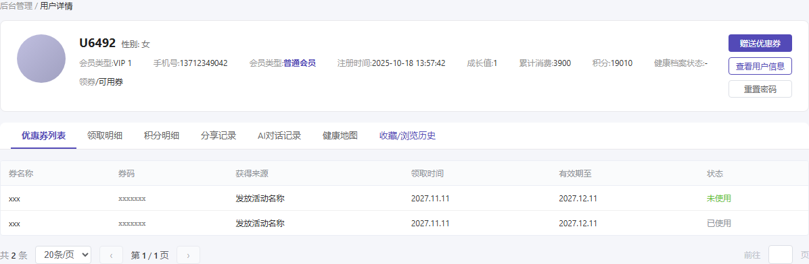
页面入口：平台端后台 会员管理（用户管理）模块 → 用户详情页的一个 Tab（与用户基本信息 / 订单 / 资产并列）。导航路径：用户管理 / 用户详情 / 用户券查询。下方查询条件与列表字段不变。⚠️ 本期平台端后台侧边栏不单独设「用户券查询」菜单项（已移入用户详情页 Tab）。
页面结构：页面分为三区域——① 用户信息卡片（顶部，展示当前查询用户的 ID / 手机号 / 会员级别 / 注册时间 / 消费金额 / 领券数量 + 操作按钮）；② 查询条件栏（用户ID或手机号输入 + 券状态下拉 + 查询/重置按钮）；③ 券实例列表表格（分页展示该用户所有领取的券记录）。
4.1.7.1 用户信息卡片字段
| 字段名称 | 需求说明 | 数据来源 |
|---|---|---|
| 用户 ID | 系统分配的用户唯一标识（如 U6492） | 《用户表》user_id |
| 手机号 | 完整展示（11 位），如 13712349042 | 《用户表》phone |
| 会员级别 | 当前会员等级（普通会员 / 高级会员 / VIP 等） | 《用户表》member_level |
| 注册时间 | 用户注册账号的时间 | 《用户表》created_at |
| 消费金额（元） | 历史累计消费总额 | 《订单表》SUM(pay_amount) WHERE user_id=当前用户 AND pay_status='已支付' |
| 领券数量 | 该用户累计领取的券实例总数（含已使用/已过期） | COUNT(《用户券表》WHERE user_id=当前用户) |
| 操作按钮 | 「查看会员」→跳转至会员详情页；「切换用户」→清空查询条件回到初始状态 | — |
4.1.7.2 查询条件（查询条件 / 查询说明）
| 查询条件 | 查询说明 |
|---|---|
| 用户 ID / 手机号 | 输入框；二选一必填，支持精确查询 |
| 券状态 | 下拉单选：未使用 / 已使用 / 已过期 / 全部；默认全部 |
4.1.7.3 列表字段表（字段名称 / 需求说明 / 数据来源）
| 字段名称 | 需求说明 | 数据来源 |
|---|---|---|
| 关联时间 | 同「领取时间」，便于运营快速定位 | 《用户券表》claim_time |
| 券码 | 券实例唯一码（等宽字体展示，如 S5196052340120804320） | 《用户券表》coupon_code |
| 券名称 | 取《券模板表》券名 | 《券模板表》coupon_name（JOIN coupon_template_id） |
| 获取来源 | 发放活动名 / 系统发券 / 手动运营 / 签到奖励等 | 《用户券表》source + 《发券活动表》activity_name |
| 领取时间 | 写入《用户券表》的时间 | 《用户券表》claim_time |
| 有效期至 | 券实例过期时间（expire_time） | 《用户券表》expire_time |
| 状态 | 未使用（绿色）/ 已使用（蓝色）/ 已过期（灰色）；已使用时显示核销订单号 | 《用户券表》status |
| 核销订单号 | 已核销时展示关联订单号；未核销/已过期显示"—" | 《用户券表》order_no（LEFT JOIN 订单表） |
列表附加规则：排序默认按领取时间倒序；分页：见 §4.1.6.5.1 分页展示规范（本维度每页条数选项 10/20/50，默认 20）；数据唯一判断：券码唯一。空态：无数据时显示"该用户暂无优惠券记录"。
4.1.7.4 数据来源（字段级）
| 字段组 | 取值逻辑说明 |
|---|---|
| 用户信息卡片 | 《用户表》（user_id / phone / member_level / created_at）+ 《订单表》聚合消费金额 + 《用户券表》COUNT 领券数 |
| 查询条件 | 《用户表》按 user_id 或 phone 精确匹配 |
| 列表全部字段 | 取《用户券表》，按 user_id + status 筛选；JOIN 《券模板表》取券名；LEFT JOIN 《发券活动表》取来源名；LEFT JOIN 《订单表》取核销订单号 |
4.1.7.5 详细逻辑规则
界面与展示规则：
- 入参校验：用户 ID 与手机号二选一必填，空值提交→提示"请输入用户ID或手机号"；手机号格式校验（11位数字），非法→提示"请输入正确的手机号"。
- 显示位置：平台端后台 关联查询 → 用户券查询（侧边栏独立菜单项，位于「关联查询」分组）；页面顶部展示用户信息卡片（头像/ID/手机号/会员级别/注册时间/消费金额/领券数量），卡片右侧提供「查看会员」（跳转会员详情）和「切换用户」按钮。
- 极限值处理：单次查询结果上限 1000 条，超出提示"数据量较大，请缩小筛选范围后重试"；分页每页 10/20/50 条，默认 20；列表按领取时间倒序排列。
- 状态标签颜色：未使用=绿色(#67c23a)、已使用=蓝色(#409eff)、已过期=灰色(#909399)。
业务逻辑与边界条件：
- 未登录拦截：平台端后台需登录且具备「优惠券管理」权限，无权限→403 提示"无权访问此模块"。
- 交互反馈：查询中显示 loading 骨架屏；查询完成显示结果数（如"共 4 条记录"）；无数据时显示空态"该用户暂无优惠券记录"。
- 按钮状态切换：「查询」按钮点击后 disabled 防重复提交，请求完成后恢复可用状态；「重置」清空所有筛选条件并自动重新查询（回到默认全部状态）；「切换用户」清空搜索框和状态下拉，重置到第 1 页。
- 防刷控制：同一操作账号 1 秒内最多触发 1 次查询请求，超频→toast 提示"操作过于频繁，请稍后再试"。
- 数据隔离：仅展示当前选中用户的券实例，不可跨用户查看；券状态下拉枚举与《用户券表》status 字段严格对齐（未使用/已使用/已过期）。
- 退单口径一致性：已使用的券即使关联订单发生退款，券状态仍保持「已使用」不回滚（与 §4.6 券状态机一致）。
- 撤回召回：运营在「撤回管理」页对券模板执行撤回时，将该券模板使用状态置为「已结束」，并物理删除该模板下「未使用」的用户券实例；已使用/已过期实例不受影响，其他用户不受影响（详见 §10.9）。
4.2 会员中心-批量送券
原型示意：
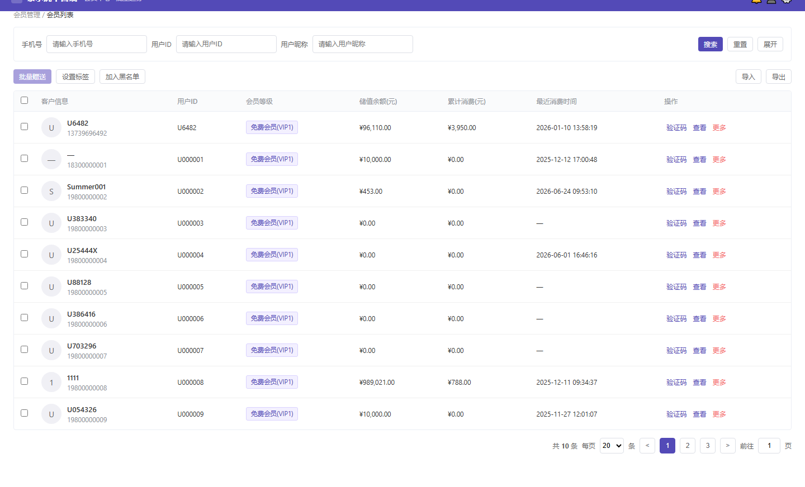
功能定位：会员管理模块提供运营手动给用户批量赠送优惠券的能力。运营在会员列表中多选目标用户，点击「批量赠送」按钮后，在弹窗中选择一张已上架（启用）的优惠券，确认后系统按用户维度发放（默认每人 1 张）。
4.2.1 M1 会员列表
页面入口：会员管理 / 会员列表；按钮入口位于列表左上方「批量赠送」。
页面原型与交互示意
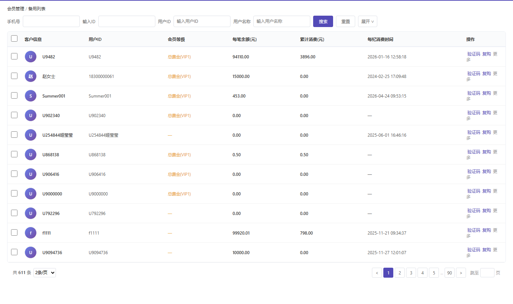
4.2.1.1 查询条件（查询条件 / 查询说明）
| 查询条件 | 查询说明 |
|---|---|
| 手机号 | 输入框；支持模糊匹配用户手机号 |
| 用户ID | 输入框；支持模糊匹配用户ID |
| 用户昵称 | 输入框；支持模糊匹配用户昵称 |
4.2.1.2 列表字段表（字段名称 / 需求说明 / 备注）
| 字段名称 | 需求说明 | 备注 |
|---|---|---|
| 复选框 | 每行一个复选框，支持多选；表头复选框可全选当前页 | 仅用于批量赠送等批量操作 |
| 客户信息 | 用户头像 + 昵称 + 手机号；昵称为空时显示「—」 | 取《用户表》avatar/nick/phone |
| 用户ID | 平台用户唯一标识 | 取《用户表》user_id |
| 会员等级 | 当前会员等级，如「免费会员(VIP1)」 | 取《会员等级表》level_name |
| 储值余额(元) | 用户当前储值账户余额 | 取《用户资产表》stored_value_balance |
| 累计消费(元) | 用户历史累计消费金额 | 取《用户资产表》total_consume_amount |
| 最近消费时间 | 最近一次订单支付成功时间；无消费记录显示「—」 | 取《订单表》最新 pay_time |
| 操作 | 验证码 / 查看 / 更多 | 沿用会员中心现有操作，本期不变 |
4.2.1.3 功能按钮（操作列与批量操作）
| 按钮 | 显示条件 | 功能说明 | 权限 |
|---|---|---|---|
| 批量赠送 | 列表左上方常驻；未勾选用户时禁用，勾选后高亮可用 | 打开「批量赠送优惠券」弹窗，进入选券流程 | 会员运营 |
| 设置标签 | 列表左上方常驻 | 对勾选用户批量设置会员标签（沿用现有） | 会员运营 |
| 加入黑名单 | 列表左上方常驻 | 对勾选用户批量加入黑名单（沿用现有） | 会员运营 |
| 导入 / 导出 | 列表右上方常驻 | 会员数据导入导出（沿用现有） | 会员运营 |
| 验证码 | 操作列 | 向该用户发送短信验证码（沿用现有） | 会员运营 |
| 查看 | 操作列 | 进入用户详情页（沿用现有） | 会员运营 |
| 更多 | 操作列 | 更多单用户操作（沿用现有） | 会员运营 |
4.2.1.4 详细逻辑规则
界面与展示规则：
- 列表默认按最近消费时间倒序排列；分页支持 20/50/100，默认 20。
- 表头全选框仅选中当前页可见行；切换分页后保留已勾选状态。
- 「批量赠送」按钮文案随已选人数变化：未勾选时显示「批量赠送」；勾选后显示「批量赠送 (N)」。
- 未勾选用户时点击「设置标签」「加入黑名单」等批量按钮 → toast 提示「请先勾选用户」。
业务逻辑与边界条件：
- 未登录拦截：平台端后台需登录且具备「会员运营」权限，无权限→403 提示"无权访问此模块"。
- 数据隔离：列表仅展示本业务域可见用户，跨业务域用户不可见。
- 防刷控制：批量操作按钮点击后进入 loading 态，接口返回前不可重复点击。
4.2.2 M2 批量赠送优惠券弹窗
触发方式：会员列表勾选 ≥1 位用户后，点击「批量赠送」按钮；弹窗标题为「选择要赠送的优惠券」。
4.2.2.1 弹窗字段表（字段名称 / 控件类型 / 需求说明 / 校验规则 / 备注）
| 字段名称 | 控件类型 | 需求说明 | 校验规则 | 备注 |
|---|---|---|---|---|
| 已选用户提示 | 文本条 | 弹窗顶部展示「已选择 N 位用户，赠送后每人将获得 1 张所选优惠券」 | 只读，取列表已勾选用户数 | 帮助运营确认发放范围 |
| 优惠券搜索 | 输入框 | 按优惠券名称 / 使用规则关键词模糊搜索 | 非必填；实时过滤列表 | — |
| 优惠券列表 | 单选列表 | 展示上架状态=启用的满减券，每行展示券名、券类型、规则、有效期（不再展示剩余库存/总库存） | 必选 1 项；未选时「确定赠送」按钮禁用 | 下架 / 已删除券不展示 |
4.2.2.2 选券规则（与优惠券管理下架规则配套）
| 规则项 | 规则说明 |
|---|---|
| 可选范围（硬规则） | 弹窗内优惠券列表仅展示上架状态=「启用」的券；「下架」「已删除」的券不出现、不可选、保存时亦不可传入。 |
| 前端过滤 | 选择器接口请求参数携带 listing_status=enabled 过滤；后端返回列表已预过滤，前端无需二次拦截。 |
| 与优惠券管理联动 | 若某券模板在弹窗打开后被下架，将触发 §4.3 的下架前活动引用校验逻辑扩展：若该券已被会员中心批量赠送任务锁定或正在发放中，系统应禁止下架并提示先完成或取消相关赠送任务（具体实现待技术 Owner 确认）。 |
| 确认时校验 | 点击「确定赠送」时后端二次校验所选券仍为上架状态；若已被下架 → 提示"XXX 券已下架，请重新选择"（券模板已无库存字段，不再校验库存不足）。 |
| 库存校验 | 券模板已取消发行量/剩余库存字段，库存校验删除 |
💡 规则一致性说明：本弹窗的「只能选上架券」规则与 §4.5「发券活动选择券模板规则」完全一致，均受 §4.3「优惠券管理-下架前校验活动引用」约束。区别在于触发源不同——发券活动为系统自动触发，会员中心批量赠送为运营手动触发；二者共用同一套券模板可选集与上架状态口径。
4.2.2.3 发放规则与反馈
| 规则项 | 规则说明 |
|---|---|
| 发放数量 | 每个被选中的用户获得 1 张所选优惠券；同一批次暂不支持给同一用户发放多张。 |
| 发放来源 | 用户券实例的获取来源记录为「会员中心批量赠送」；关联操作人 ID 与操作时间。 |
| 成功反馈 | 发放成功后 toast 提示"已成功向 N 位用户赠送「券名」"，并清空列表勾选状态。 |
| 失败反馈 | 部分失败时展示失败用户清单（用户ID + 失败原因），成功用户仍正常到账；整体失败时回滚并提示具体原因。 |
| 券状态 | 发放成功后用户券实例进入「未使用」状态，有效期按券模板规则计算；运营撤回时（见 §10.9）未使用实例被物理删除。 |
4.2.2.4 详细逻辑规则
界面与展示规则：
- 弹窗打开时默认未选中任何券；优惠券列表按创建时间倒序排列。
- 券模板已取消发行量/剩余库存字段，列表中不再展示库存；选中后不再因库存不足拦截。
- 券名超长时截断加「…」；有效期精确到天。
- 搜索框输入后实时过滤（或失焦后触发），无结果时显示空态「暂无符合条件的可用优惠券」。
业务逻辑与边界条件：
- 未登录拦截：平台端后台需登录且具备「会员运营」权限。
- 并发控制：同一操作账号 2 秒内仅允许发起 1 次批量赠送请求，超频→toast 提示"操作过于频繁，请稍后再试"。
- 数据一致性：批量赠送为异步发放时，需记录发放任务批次号，便于后续查询与失败重试。券模板已无剩余库存字段，不再扣减库存。
- 边界：券模板「每人领取」字段已删除，不再按每人领取上限拦截；如批量赠送仍需防重复发放，由发放接口按 (user_id, coupon_template_id, source) 幂等控制。
4.2.3 数据来源（字段级）
| 字段名称 | 取值逻辑说明 |
|---|---|
| 客户信息 / 用户ID / 会员等级 / 储值余额 / 累计消费 / 最近消费时间 | 取《用户表》《会员等级表》《用户资产表》《订单表》 |
| 优惠券列表 | 调《券模板表》接口，参数 listing_status=enabled + coupon_type=full_discount（本期仅满减券） |
| 发放动作 | 调批量发放接口，写入《用户券表》（状态=未使用，来源=会员中心批量赠送） |
| 库存扣减 | 券模板已取消发行量/剩余库存字段，不再扣减库存 |
4.3 App 端（本期新增：我的优惠券 + 订单详情选券 + 券规则页）⚠️ 商品详情页领券入口已移至二期（§11.2.1）
原型示意：

App 端 C 端链路（本期）：用户获券（发券活动 / 系统发券）→ 我的优惠券（券中心）查看三态，点「去使用」跳转确认订单页（系统自动选购本券适用范围内的可购买商品并选择最大数量优惠）→ 选券抵扣、支付成功核销。券规则页可从「我的优惠券」与「订单详情选券」两处点「券规则 ›」查看。商品详情页领券入口（原 C 端 §4.3.2）已移至二期，见 §十一 二期待办 11.2.1。以下逐页面逐功能点拆解。
4.3.2 券规则页
4.3.2.1 原型与交互示意
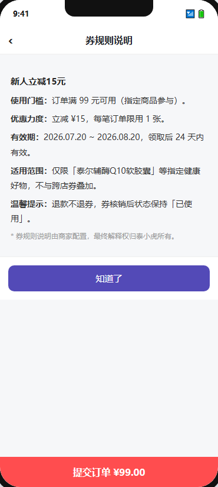
券规则页为独立页面（或全屏弹窗），展示单张优惠券的完整规则说明。内容来自后端券模板的「券规则说明」富文本字段（rule_desc），C 端按纯文本/HTML 直接渲染，不再画成固定的「有效期/适用范围/叠加规则…」结构化页面。
4.3.2.2 详细逻辑规则
界面与展示规则：
- 页面标题：「券规则说明」。
- 内容区：渲染《券模板表》
rule_desc字段的 HTML 内容（支持文本、图片、富文本样式）。 - 内容为空时：显示「—」或「暂无规则说明」。
- 底部固定按钮：「知道了」或左滑返回关闭页面。
入口说明（明确链路，券中心 / 订单详情两处均可进入）：
- 用户在 我的优惠券（券中心） 页 → 点击任意券卡片的 「券规则 ›」 按钮 → 跳转 券规则页（本页）。
- 用户在 订单详情选券 页 → 点击可用券列表中任意券的 「券规则 ›」 → 跳转 券规则页（本页）。
- （二期）用户进入 商品详情页 → 看到 优惠券入口条 → 点击 → 「优惠详情」弹窗 → 「券规则 ›」→ 跳转本页（见 §11.2.1）。
业务逻辑与边界条件：
- 券规则页仅展示、无操作；不涉及领券/用券/核销逻辑。
- 券规则内容与券模板绑定，同一张券的所有用户看到相同的规则说明。
- 纯文本长度 ≤2000 字，超出前端截断（与 §4.1.3 D2 表单字段表「券规则说明」校验一致）。
4.3.2.3 数据来源（字段级）
| 字段名称 | 取值逻辑说明 |
|---|---|
| 券规则说明 | 取《券模板表》rule_desc 字段（HTML 富文本） |
4.3.4 我的优惠券（三态）本期新增
4.3.4.1 原型与交互示意
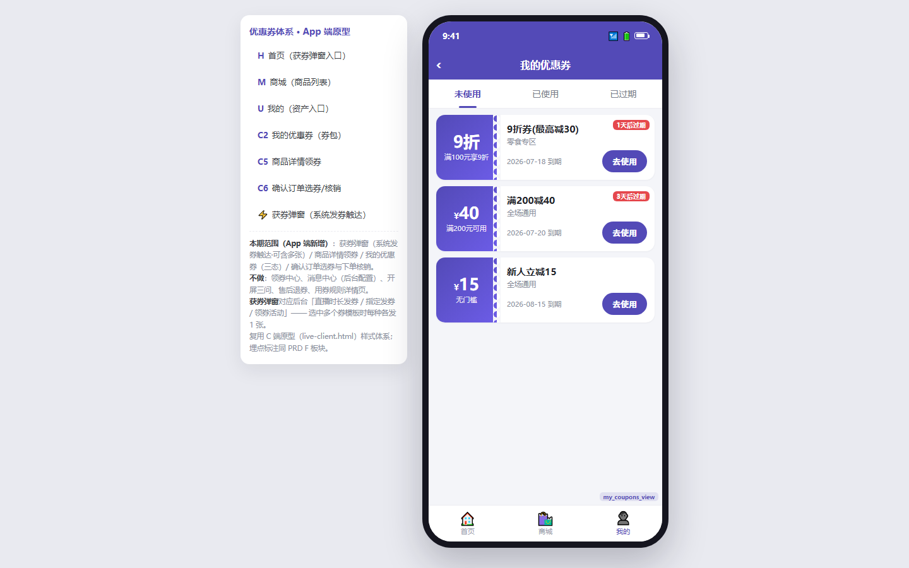
独立页面，顶部三个 Tab（未使用 / 已使用 / 已过期），默认「未使用」；示意图见上方 App 原型「我的优惠券」页。
4.3.4.2 详细逻辑规则
界面与展示规则：
- Tab 结构：未使用 / 已使用 / 已过期，点击切换；未使用默认选中。
- 未使用券卡片：券名 / 面额（大字突出）/ 门槛金额 / 有效期（起止日期）/ 适用范围标签（全场/指定商品/指定店铺）；操作按钮「去使用」→ 跳转确认订单页（自动选购本券适用范围内的可购买商品，并选择最大数量优惠），另有「券规则 ›」查看规则（跳转券规则页）。
- 已使用券卡片：券名 / 面额 / 使用时间 / 关联订单号；状态标签「已核销」（灰色置灰）。
- 已过期券卡片：券名 / 面额 / 过期时间；状态标签「已过期」（灰色置灰）。
- 极限值：券名超 12 字截断「…」；列表一次加载 20 条，滚动加载更多。
- 空状态：对应 Tab 无券 → 插画 + 文案「暂无优惠券」+「去逛逛」跳转商城。
- 临近过期(≤3天)：未使用券标红提示「X天后过期」。
业务逻辑与边界条件：
- 三态由《用户券表》status 驱动；过期由定时任务更新 status=已过期。
- 下拉刷新重新拉取；分页滚动加载（每页 20）。
- ⚠️ 跨端口持有券展示：若用户持有某券但当前端口不在其
usable_ports内，该券仍展示、状态标「生效中」但置灰不可选，点击提示「此券仅支持在 {usable_ports 端口名称} 使用」（完整规则见 §4.3.5）。
4.3.4.3 列表字段表（字段名称 / 需求说明 / 备注）
| 字段名称 | 需求说明 | 备注 |
|---|---|---|
| 券名 | 取《券模板表》券名 | 超 12 字截断 |
| 面额 | 券面额，大字突出 | 单位 ¥ |
| 门槛金额 | 使用门槛 | 无门槛显示「无门槛」 |
| 有效期 | 起止日期 | 未使用展示 |
| 适用范围标签 | 全场 / 指定商品 / 指定店铺 | — |
| 状态 | 未使用 / 已使用 / 已过期 | 由 Tab 过滤 |
| 关联订单号 | 已使用券的核销订单号 | 仅已使用展示 |
列表附加规则：排序：未使用按过期时间升序（先过期置顶）；分页：每页 20，滚动加载；合计：无；数据唯一判断：券码唯一。
4.3.4.4 功能按钮总表（功能名称 / 功能说明 / 备注）
| 功能名称 | 功能说明 | 备注 |
|---|---|---|
| 去使用 | 跳转确认订单页（自动选购本券适用范围内的可购买商品，并选择最大数量优惠） | 仅未使用 Tab |
| 券规则 › | 查看该券完整规则说明（跳转券规则页） | 未使用 / 已使用券 |
| 下拉刷新 | 重新拉取券列表 | 页面顶部手势 |
| Tab 切换 | 切换三态 | 顶部 Tab |
4.3.4.5【去使用】功能
| 项 | 说明 |
|---|---|
| 功能说明 | 从未使用券跳转确认订单页（自动选购本券适用范围内的可购买商品，并选择最大数量优惠） |
| 显示位置 | 未使用券卡片按钮 |
| 权限 | 仅查看本人券包 |
| 前置条件 | 当前 Tab=未使用；券在有效期内 |
| 功能实现 | 点「去使用」→ 取券适用范围 → 自动勾选该范围内可购买商品并选择最大数量优惠 → 跳转确认订单页 |
4.3.4.6 查询条件（查询条件 / 查询说明）
| 查询条件 | 查询说明 |
|---|---|
| 状态 Tab | 顶部 Tab 单选：未使用 / 已使用 / 已过期；默认未使用 |
| 下拉刷新 | 手势触发，无查询条件 |
4.3.4.7 数据来源（字段级）
| 字段名称 | 取值逻辑说明 |
|---|---|
| 全部字段 | 调用《用户券表》接口，按 user_id + status 筛选排序 |
4.3.4.8 状态流转
未使用 ──(支付成功核销)──> 已使用；未使用 ──(超过 expire_time，定时任务)──> 已过期。
4.3.5 券可使用端口·跨端口展示与拦截规则
券模板在平台端配置「券可使用端口」(usable_ports，枚举：泰小虎App / 泰尔超优惠H5 / 泰尔超优会小程序，见 §4.1.3 D2)。因 App / 小程序 / H5 账号与券包打通，用户在一个端口领取的券，在另外两个端口也能看到。本规则定义已持有券在当前端口的展示与可用判定（与发券投放的端口过滤互补）。
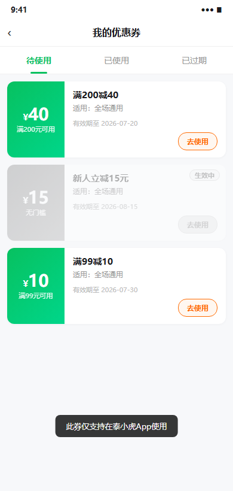
4.3.5.1 详细逻辑规则
展示规则：
- 发券投放：发券活动 / 系统发券仅向
usable_ports内端口投放，用户不可跨端口领取。例如某券usable_ports=[泰小虎App]，则 H5、小程序端不出现该券的投放与领取入口。 - 已持有券（我的优惠券 / 选券列表）：跨端口统一展示。判定方式——取当前端口标识
current_port，与券模板usable_ports比对：- 若
current_port ∈ usable_ports→ 正常展示，可正常使用 / 选择（状态按既有三态：未使用 / 已使用 / 已过期）。 - 若
current_port ∉ usable_ports（端口不对）→ 仍展示该券，状态标签统一标「生效中」（表示券本身有效、未使用、在有效期内），但整体置灰 / 不可选（不能使用）。
- 若
- 置灰样式：券卡片 / 选券行降低透明度或灰化；「去使用」按钮禁用；选券列表该条目 Radio 禁用不可点。
点击交互：
- 端口不对的置灰券，用户点击（卡片 / 行任意位置，含已禁用的「去使用」按钮）→ 弹出提示（Toast 或轻提示）：「此券仅支持在 {usable_ports 端口名称} 使用」。
- 端口名称取券模板
usable_ports的配置值，多个端口用「、」连接。示例：usable_ports=[泰小虎App]→ 「此券仅支持在泰小虎App使用」usable_ports=[泰小虎App, 泰尔超优惠H5]→ 「此券仅支持在泰小虎App、泰尔超优惠H5使用」
- 提示为纯文案提示，点击不触发任何跳转或选券动作。
业务逻辑与边界条件：
- 「生效中」与既有三态并行：端口不对的券，其底层
status仍为「未使用」（时效内、未核销），仅在前端展示层叠加「端口不匹配」置灰态，不真正改变券实例状态。 - 跨端口账号一致性：判定以登录用户统一券包 + 当前所在端口为准，不区分领取来源端口。
- 后端二次校验：选券 / 下单接口除既有门槛、适用范围、底价校验外，须校验
current_port ∈ usable_ports；前端置灰仅为体验拦截，后端为权威拦截，防止绕过。
4.3.5.2 数据来源（字段级）
| 字段名称 | 取值逻辑说明 |
|---|---|
| 券可使用端口 usable_ports | 取《券模板表》usable_ports 字段；券详情 / 券模板接口须返回该字段供 C 端比对 current_port |
| 当前端口 current_port | 取客户端运行环境标识（App / H5 / 小程序），由客户端传入或由运行容器判定 |
| 用户券 status | 取《用户券表》status（未使用 / 已使用 / 已过期），与端口匹配态叠加展示 |
4.3.6 确认订单选券 / 核销（付款前结算页）本期新增
4.3.6.1 原型与交互示意
确认订单页（非订单详情页），自上而下包含：导航栏 → 收货地址 → 店铺名 → 商品列表 → 价格摘要（商品总价 / 运费）→ 优惠券入口行 → 底部提交栏（实付 + 已省 + 提交订单按钮）。点击优惠券入口行后，从页面底部滑出「优惠券选择」弹窗，弹窗内以统一列表展示当前订单的可用与不可用优惠券（不按券类型分 Tab）。
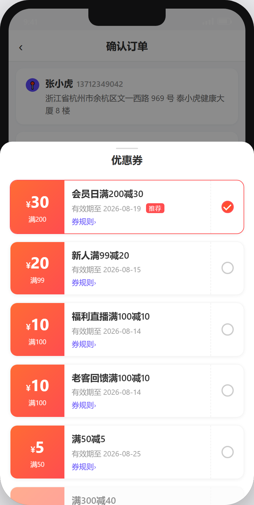
4.3.6.2 详细逻辑规则
界面与展示规则：
- 页面结构（确认订单页）：
- 导航栏：返回箭头（‹）+ 居中标题「确认订单」+ 系统状态栏（时间 / 信号 / WiFi / 电池）。
- 收货地址：用户昵称 + 手机号 + 完整地址（省/市/区/街道/门牌）；右侧 `>` 箭头点击跳转地址选择页。
- 店铺名称：灰色小字标签「XX旗舰店」，标识商品归属店铺。
- 商品列表：每项含商品图标（左）+ 商品名（含规格/口味括号注释）+ 规格 + 单价 × 数量；多项商品纵向排列。
- 价格摘要：「商品总价 ¥XXX.XX」「运费 ¥X.XX」，右对齐数字。
- 优惠券入口行：左侧标题「优惠券」+ 右侧动态汇总「-¥XX.XX」（红色高亮）+ 右箭头 ›；点击后打开底部弹窗。
- 底部提交栏（sticky 固定底栏）：左侧「实付¥XXX.XX」+「已省¥XX.XX」（红色）；右侧「提交订单」主按钮（紫色圆角大按钮）。
- 优惠券选择弹窗（底部 Sheet）：
- 弹窗标题：居中「优惠券」，顶部带拖拽指示条。
- 不区分券类型：弹窗内不按券类型分 Tab，所有可用 / 不可用券在同一列表中按 §4.3.6.2「排序规则」统一排列；券模板的「可叠加 / 单个」属性仍仅用于决定右侧 Stepper 是否出现（见数量 Stepper 交互规则），不再作为分类维度。
- 券列表：每张券为一行卡片，布局分三区：
- 左侧金额区：红色渐变背景，大字「¥面额」+ 小字「满X」（门槛，无门槛时显示「无门槛」）。
- 中间信息区：券名（粗体）+ 有效期（小字灰「有效期至 YYYY-MM-DD」）+「券规则 ›」（紫色链接，点击跳转 §4.3.2 券规则页）+ 推荐标签（红色小 Tag）。
- 右侧操作区：单选 Radio（空心 ○ 未选中 / 红实心 ● 已选中）+ 数量 Stepper（仅选中且「可多张使用」券显示：`−` 按钮 + 数字 + `+` 按钮；普通券或未选中时不显示 stepper）。
- 不使用优惠券：列表底部提供 Radio 选项，选中后清空所有券选择，实付恢复原价。
- 关闭方式：点击弹窗外半透明遮罩、点击返回/关闭区域、或向下滑动弹窗，关闭弹窗并回到确认订单页。
- 默认选中：进入确认订单页时自动选中按排序规则排列后的第一张券（即排序后列表首位；因「可用券整体排前」，首位即首位可用券；标记「推荐」标签）；若无可用券则默认「不使用优惠券」态。选中结果随排序置顶展示。
- 排序规则（可用券整体排前、不可用券整体排后，两类券各自组内排序；不按券类型分 Tab）：
- 第一级 · 可用券优先：全部可用券排在不可用券之前；两类券在列表中相邻分块展示（可用块在上、不可用块在下），块内各自排序。
- 可用券组内排序：① 优惠金额降序（主）：按该券对当前订单可产生的抵扣金额从大到小排列；叠加券按当前持有可叠加张数上限计算的减免额计入；② 叠加券优先（次）：抵扣金额相同时，可叠加券排在单个优惠券之前；③ 到期时间倒序（三）：金额与叠加属性均相同时，按券到期时间倒序（晚过期者在前）；④ 获得时间倒序（末）：到期时间也相同时，按券获得时间（领取时间）倒序（晚获得者在前）。
- 不可用券组内排序：① 叠加券优先（主）：可叠加券排在非叠加券之前；② 同金额按到期时间倒序（次）：叠加属性相同时，面额相同者按券到期时间倒序（晚过期者在前）；③ 同到期时间按获得时间倒序（末）：到期时间也相同时，按券获得时间（领取时间）倒序（晚获得者在前）。
- 券叠加属性口径（可叠加 / 单个，非独立分类字段，本期不再用于 Tab 分类）：
取值来源：券的「可叠加 / 单个」属性不是后台单独维护的分类字段，而是取券模板的「优惠规则 + 类型修饰」动态派生（如「满减 + 可叠加」）。本期该属性不再用于 Tab 分类展示，仅用于两处：① 决定右侧 Stepper 是否出现（见数量 Stepper 交互规则）；② 排序时叠加券优先于非叠加券（见排序规则）。
- 拼接公式：券类型名称 = 优惠规则（取券模板的优惠计算规则，如「满减」） + 类型修饰（「可叠加」或空）。当前仅「满减」一种优惠规则，故派生结果为「满减」（空修饰）与「可叠加满减」（可叠加修饰）；但二者同列展示、不分组。
- 后台设置开关：券模板配置中存在「可叠加优惠 / 单个优惠」两个选项（默认「单个优惠」）；选择「可叠加优惠」即驱动 「可多张使用（SAME_COUPON_MULTI_USE）」 能力（见 §4.1.3.2），C 端据此显示 Stepper 并允许调整张数；选择「单个优惠」则不显示 Stepper。该「可叠加优惠」设置与 Stepper 的「可多张使用」为同一底层能力的不同表述。
- 当前取值：
- 满减（单个优惠）：优惠规则=满减 + 类型修饰=空；同一订单中一般只选 1 张。
- 可叠加满减（可叠加优惠）：优惠规则=满减 + 类型修饰=可叠加；允许通过 Stepper 调整使用张数；具体哪些券落入本属性由券模板配置决定。
- 后续扩展：类型名称按「优惠规则 + 类型修饰」规则自动拼接扩展；后续新增优惠规则（如折扣券等）或新的类型修饰时，名称随之派生，前端按字典 / 拼接逻辑渲染，无需硬编码每个类型。
- 商品行「优惠后金额」与分摊规则（本期新增字段）：
定义：确认订单页商品列表中，每行展示的「优惠后金额」= 该商品所有优惠完成后的最终实付（含多盒多折 + 臻享积分抵扣 + 优惠券减免的分摊额），即该商品实际应承担的金额。
计算顺序（与全单一致）：多盒多折（商品级）→ 臻享积分抵现（支付级）→ 优惠券满减（最后算）。
分摊范围：仅券适用范围内的商品参与分摊；范围外商品不参与分摊，其优惠后金额 = 自身多盒多折后金额（若未参与任何券 / 积分，则为其原价）。
分摊规则：券适用范围内的可优惠商品，按各自金额比例平均分摊全部优惠减免（含多盒多折、积分、券）；分摊产生的余数（无法整除的零散金额）归入随机一个可优惠商品行，确保 ∑商品优惠后金额 = 商品总价 − 全部优惠减免额（账平）。
数量 Stepper 交互规则（同款券叠加多张使用）：
- 显示条件：仅当满足以下全部条件时，该券右侧才显示 stepper：
- 该券已被 Radio 选中（●）；
- 该券模板配置了「可多张使用」（
SAME_COUPON_MULTI_USE=true，见 §4.1.3.2）； - 用户当前持有该券模板的未使用张数 ≥ 2。
- 数值约束：
- 下限 = 1（减到 1 时 `−` 按钮禁置灰不可点，至少保留 1 张）。
- 上限 = 用户持有该券的未使用张数（不可超过持有量；加到上限时 `+` 按钮置灰）；另受「本单实际可抵扣张数上限」约束——当已选张数使下一张剩余实付 < 门槛 X 时，即使未达持有量，`+` 也禁用并提示「本券在本单已达可用上限」（见 §4.3.6.7），杜绝「占用但不抵扣」。
- 实时计算：stepper 数量变更后，立即触发重新计算：
- 本券总抵扣 = 面额 × 数量（单档）/ 按叠加公式逐档计算（叠加券）；
- 逐张门槛重判（见 §4.3.6.7）：每张券以「前几张扣减后的剩余实付」为基准判定是否达标；
- 更新确认订单页优惠券入口行「-¥XX.XX」；
- 更新底部栏「实付 ¥XX · 已省 ¥XX」；
- 若某张因剩余 < 门槛导致抵扣封顶 0，该张在券行内标注轻提示「未满 ¥X·本次不抵扣」（不阻断选用）。
- 切换券时重置：用户从券 A 切换到券 B（点券 B 的 Radio），stepper 重置为 1；券 A 的选择状态取消。
业务逻辑与边界条件：
- 预占/释放：提交订单 → 后端预占所选券（未使用→已预占，按 stepper 数量逐张预占）；支付失败/取消 → 全量回退未使用。
- 并发防抢占：支付期间所选券被其他订单占用 → 后端返回冲突，前端提示「优惠券已被使用」，刷新可用券列表并重算。
- 核销时机：支付网关回调成功后所选券全部置「已使用」（按实际使用张数），逐张写《核销流水表》。
- 跨端口持有券拦截：若用户持有某券但当前端口不在其
usable_ports内，该券在选券列表中置灰不可选（整行降低透明度 + Radio 禁用），行内显示提示条文案「仅限（{usable_ports 端口名称}）可使用」，点击该行仍触发 Toast 复述同一原因；后端在下单/选券接口二次校验current_port ∈ usable_ports，前端置灰仅为体验拦截（完整规则见 §4.3.5）。跨端口券不显示 stepper（即使满足其他条件）。 - 不可用券提示条（商品 / 店铺 / 端口不匹配 / 订单金额不足，共四类）：不可用券（端口 / 商品 / 店铺任一不匹配，或订单金额未达券门槛）整行置灰 + 行内提示条 + 点击复述 Toast，提示条文案由选券接口随券数据返回（字段
unavailable_reason，取以下四类模板之一），前端直接渲染，不做本地拼装：- 商品不匹配：券适用范围 =「指定商品参与 / 排除商品不参与」，当前订单不含其适用商品 → 提示条「仅限{适用商品名称}可使用」。
- 店铺不匹配：券适用范围含指定店铺约束，当前订单店铺不在其内 → 提示条「仅限{适用店铺名称}可使用」。
- 端口不匹配：见跨端口持有券拦截，提示条「仅限（{usable_ports 端口名称}）可使用」。
- 订单金额不足：当前订单可用商品金额（门槛判定口径，见 §4.3.6.7）＜ 券使用门槛
threshold→ 提示条「订单金额不足，还差 ¥{差额} 元可用」（差额 =threshold− 当前订单可用商品金额（已含多盒多折与臻享积分抵扣后金额，见 §4.3.6.7 / §4.1.3.3），向上取整到分）。
- 单 SKU 券作用于 SKU 行：适用范围=「指定商品参与」的券，其门槛判定、减免计算、优惠展示均作用于对应 SKU 行（见 §4.3.6 单 SKU 规则），不在订单级「优惠券」入口行按订单总额计算。
4.3.6.3 列表字段表（字段名称 / 需求说明 / 备注）
| 字段名称 | 需求说明 | 备注 |
|---|---|---|
| 排序规则 | 可用券整体排前、不可用券整体排后（两类各自组内排序，不按券类型分 Tab）：可用券组内＝优惠金额降序 → 叠加券优先 → 到期时间倒序 → 获得时间倒序；不可用券组内＝叠加券优先 → 同金额按到期时间倒序 → 同到期按获得时间倒序 | 详见 §4.3.6.2 排序规则 |
| 弹窗标题 | 居中「优惠券」+ 顶部拖拽指示条 | 底部 Sheet |
| 金额区（左侧） | 红色渐变背景 + 大字「¥面额」+ 小字「满X」门槛 | 视觉突出面额 |
| 券名 | 取《券模板表》name | 粗体显示 |
| 有效期 | 券 expire_time，格式「有效期至 YYYY-MM-DD」 | 过期券不出现在可用列表 |
| 券规则 › | 紫色链接，点击跳转 §4.3.2 券规则页查看详情 | — |
| 推荐标签 | 系统默认选中的券（排序后第一张，即首位可用券）展示红色「推荐」Tag | 默认选中该券 |
| 单选 Radio | 选中状态（○ 未选中 / ● 已选中） | 默认选中排序后第一张券（首位可用券，标记「推荐」） |
| 数量 Stepper | `−` 数字 `+` 步进器；仅「可多张使用」券且被选中时显示 | 下限=1 / 上限=持有量；普通券不显示 |
| 不可用原因提示条 | 不可用券整行置灰 + 行内提示条文案：① 商品不匹配→「仅限{适用商品}可使用」② 端口不匹配→「仅限（{usable_ports 端口名称}）可使用」③ 店铺不匹配→「仅限{适用店铺}可使用」④ 订单金额不足→「订单金额不足，还差 ¥{差额} 元可用」（差额 = 券门槛 − 当前订单可用商品金额）；点击该行复述 Toast 同一原因 | 四类模板见 §4.3.6.2 业务逻辑；端口规则见 §4.3.5 |
| 优惠券入口行汇总 | 动态文本「-¥{amount}」 | 红色高亮；未使用时显示「未使用」 |
| 商品行优惠后金额 | 该商品「所有优惠完成后的最终实付」= 原价 − 分摊到的多盒多折 − 分摊到的臻享积分 − 分摊到的优惠券减免；分摊规则见 §4.3.6.2 商品行优惠后金额与分摊规则 | 展示于确认订单页商品列表每行；仅券适用范围内商品参与分摊，范围外不参与 |
4.3.6.4 功能按钮总表（功能名称 / 功能说明 / 备注）
| 功能名称 | 功能说明 | 备注 |
|---|---|---|
| 打开优惠券弹窗 | 点击确认订单页「优惠券」入口行，底部滑出选券 Sheet | 入口行右侧显示当前已优惠金额 |
| 排序展示 | 列表按 §4.3.6.2 排序规则统一排列（可用券整体排前、不可用券整体排后；可用券组内：优惠金额降序 → 叠加券优先 → 到期时间倒序 → 获得时间倒序；不可用券组内：叠加券优先 → 同金额按到期时间倒序 → 同到期按获得时间倒序） | 不提供手动排序切换 |
| 选券（Radio） | 选择/切换可用券（单选，切换时重置 stepper 为 1） | 每张券右侧 |
| 数量调整（Stepper） | 增减同款券使用数量（− 减 / + 加） | 仅「可多张使用」券且选中时显示 |
| 券规则 › | 跳转券规则页查看券使用规则详情 | 每张券信息区底部 |
| 不使用优惠券 | 放弃用券，清空选择，实付恢复原价 | 弹窗列表底部（Radio 选项） |
| 关闭弹窗 | 点击遮罩/向下滑动/返回，关闭 Sheet 回到确认订单页 | — |
| 提交订单 | 提交并预占所选券（按 stepper 数量逐张预占） | 底部栏右侧紫色主按钮 |
4.3.6.5【提交订单】功能
| 项 | 说明 |
|---|---|
| 功能说明 | 提交订单并预占所选券（含 stepper 多张），跳转收银台支付 |
| 显示位置 | 确认订单页底部 sticky 栏右侧，「提交订单」紫色圆角按钮 |
| 权限 | 仅本人可选本人的券 |
| 前置条件 | ① 已登录；② 收货地址已选（非空）；③ 购物车/商品已加入待结算；④ 持有≥1 张未使用券且满足订单门槛（无可券时可裸提交） |
| 功能实现 | ① 点「提交订单」→ 前端校验收货地址非空 + 校验所选券仍有效（未过期/未达上限/未被抢占/数量≤持有量） ② 调创建订单接口（传 selected_coupon_id + quantity）→ 后端按 quantity 逐张预占券（未使用→已预占） ③ 跳转收银台；支付成功回调 → 所选券全部置「已使用」+ 逐张写《核销流水表》+ toast「已抵扣 ¥XX」 ④ 支付失败/取消 → 所有预占券全量回退「未使用」 异常分支： － 支付前某张过期→提示「优惠券已过期」移除该张并重算其余 － 并发抢占→提示「优惠券已被使用」刷新列表 － 适用范围不匹配→该券不出现在可用列表 － stepper 数量超过持有量→前端拦截不允许提交，`+` 按钮置灰 |
4.3.6.6 数据来源（字段级）
| 字段/区域 | 取值逻辑说明 |
|---|---|
| 收货地址 | 调接口取用户默认收货地址 |
| 商品列表 | 取购物车/待结算商品快照（图标/名称/规格/单价/数量） |
| 价格摘要 | 商品总价 = Σ(单价×数量)；运费 = 调运费接口 |
| 可用券列表（含不可用） | 调接口查《用户券表》（status=未使用 + end_time>now + 门槛≤当前剩余实付；多张叠加逐张重判，见 §4.3.6.7）；不再按券类型分组返回，统一为一个列表并携带叠加属性字段与 unavailable_reason（四类：商品 / 店铺 / 端口不匹配 + 订单金额不足），由前端按 §4.3.6.2 排序规则排序（可用券整体排前、不可用券整体排后，各自组内按对应规则排序） |
| 可用券列表 | 调接口查《用户券表》（status=未使用 + end_time>now + 门槛≤当前剩余实付；多张叠加逐张重判，见 §4.3.6.7） |
| 已选汇总 | 前端实时计算：已选张数 = stepper 当前值（无 stepper 时 = 1 或 0）；已优惠额 = Σ(各券面额×数量)，逐张门槛重判后取有效减免之和 |
| 实付金额 | 前端实时计算：实付 = 商品总价 + 运费 − 已优惠额；后端下单接口二次校验 |
| 核销流水 | 支付成功逐张写《核销流水表》（order_id / user_id / coupon_id / redeem_amount / redeem_time / quantity） |
4.3.6.7 多张券叠加的满减门槛与实付下限（本期新增边界规则）
业务背景：当一张订单同时使用多张满减券（「可多张使用」开启，见 §4.1.3.2），会出现「前面的券把订单减到门槛以下后，后面的券还能不能用、怎么算」的边界问题。本规则明确裁决口径。
核心裁决（用户裁定）：多张满减券可叠加选用，每张券的「满 X」门槛以当前剩余实付逐张重判；前端限制选型上限——当已选张数使下一张的剩余实付已低于门槛 X 时，不允许继续叠加（stepper `+` 禁用 + Toast「本券在本单已达可用上限」），即仅允许选到「实际可产生减免」的张数，避免出现「占用券却不抵扣」的空耗。后端在下单 / 选券接口仍按剩余实付逐张重判兜底校验，防止前端绕过。
判定与计算规则（逐张、串行）：
- ① 门槛基准 = 当前剩余实付：第 N 张券的「满 X」门槛，以前 N−1 张券扣减后的剩余实付为判定基准，不是订单原始金额。因此前面券把订单减到 X 以下后，后续同名券的门槛按剩余实付判定会「失格」。（该剩余实付已含多盒多折与臻享积分抵扣，因券为最后一道优惠，其门槛基数即积分抵扣后金额，见 §4.1.3.3 计算基数）
- ② 剩余 ≥ X：正常抵扣：剩余实付 ≥ X 时，本券正常减免 Y（单档）或
floor(剩余÷X)×Y（叠加），实付减少。 - ③ 剩余 < X：前端禁止再选：当已选张数使下一张的剩余实付 < X（门槛失格）时，前端不允许再叠加该券——stepper `+` 禁用并提示「本券在本单已达可用上限（已无可抵扣金额）」，该券不进入占用状态、不写核销流水；订单实付保持当前值、不再下降（不找零、不结转）。
- ④ 实付下限：订单最终实付 =
max(0, 原始金额 − Σ有效减免)，不低于 0。叠加券同样适用本规则（剩余 < X 时floor(剩余÷X)=0，即抵扣 0）。 - ⑤ 单 SKU 券：按 §4.3.6 单 SKU 规则，门槛基准 = 该 SKU 行剩余实付，抵扣作用于 SKU 行；该 SKU 行剩余 < X 时同理「仍可选但抵扣 0」，不影响其他 SKU 行与订单总额下限。
示例（单档满300-100，可多张使用）：订单原始金额 350，用户持有 3 张「满300-100」。
| 叠加顺序 | 当前剩余实付 | 门槛判定 | 本券抵扣 | 叠加后实付 |
|---|---|---|---|---|
| 第 1 张 | 350 | 350 ≥ 300 ✅ | −100 | 250 |
| 第 2 张 | 250 | 250 < 300（门槛失格） | 前端禁用 `+`·不可再选 | 250（不变） |
| 第 3 张 | 250 | —（已达上限·不可选） | 前端禁用 | 250（不变） |
即：第 1 张正常减到 250；第 2、3 张因剩余实付 250 < 300 已门槛失格，前端禁止再选（stepper `+` 禁用 + Toast），仅第 1 张实际占用并核销，实付保持 250。
展示规则：
- 订单详情页选券列表 / 优惠明细：对已选券正常展示抵扣明细；对「已达可用上限、不可再选」的券，前端禁用 `+` 并轻提示「本券在本单已达可用上限」，不展示「不抵扣」占用态（按用户裁定：前端限制选型上限，杜绝空耗占用）。
- 优惠明细区仅展示最终实付（不展示负数 / 找零）；多张叠加时逐张列出抵扣明细，其中抵扣 0 的券标注「未达门槛·不抵扣」。
- 后端在下单 / 选券接口按「剩余实付逐张重判 + 封顶 0 + 下限 0」二次校验，前后端规则一致，防止绕过。
✅ 已裁定（用户）：多张叠加时「剩余 < X 仍可选」的券，前端限制选型上限（见本节约③），不允许进入占用状态；仅「实际可产生减免」的券才占用并标记已使用、写核销流水。故不存在「占用但不抵扣」的空耗情形，本条开放项已裁定关闭。
4.3.6.8 状态流转
未使用 ──(提交订单)──> 已预占 ──(支付成功)──> 已使用；已预占 ──(支付失败/取消)──> 未使用。
4.3.6.9 「可共用优惠」逐类型 C 端核销方案
本节在 §4.1.3.2「可共用优惠」字段基础上，明确 C 端在确认订单选券 / 核销环节，针对每种可共用优惠类型的具体处理方案（判定时机、计算顺序、核销时机、后端校验）。三种类型互相独立、可任意组合勾选，C 端按下方逐类型规则叠加处理；组合时计算顺序固定为「多盒多折（商品级）→ 臻享积分抵现（支付级，作用于多盒多折后实付）→ 优惠券满减（订单级，最后计算）」。
A. 可多张使用（SAME_COUPON）
- 判定时机：确认订单页选券时，仅当该券被 Radio 选中、且用户持有同模板未使用张数 ≥ 2，显示数量 Stepper（见 §4.3.6.2）。
- 选型上限（前端限制）：可选张数上限 = min(持有未使用张数, 本单实际可抵扣张数上限)。当已选张数使下一张的「剩余实付 < 门槛 X」时，`+` 禁用并提示「本券在本单已达可用上限（已无可抵扣金额）」——不允许继续叠加占用，杜绝「占用券但不产生减免」的空耗（本裁定见 §4.3.6.7 ③）。
- 计算顺序：每张独立按「满 X 减 Y」（单档）或叠加公式（选叠加优惠）计算，合计减免受订单可用商品金额封顶（实付不为负）；单 SKU 券按 §4.3.6 单 SKU 规则作用于对应 SKU 行。
- 核销时机：支付成功回调后，按实际使用张数逐张将券由「已预占」置「已使用」，并逐张写《核销流水表》（order_id / user_id / coupon_id / redeem_amount / redeem_time / quantity）。
- 后端校验：下单 / 选券接口按「剩余实付逐张重判 + 选型上限 + 实付下限 0」二次校验，前后端规则一致，防止前端绕过。
B. 臻享积分（ZHENXIANG_POINTS）
- 含义：本券勾选「臻享积分」后，允许与「臻享积分抵现」在同一订单并存。
- 判定时机：选券时若该券已勾选此类型，确认订单页「优惠」区同时展示券抵扣与臻享积分抵现两项（积分项取用户当前可用积分换算的抵现额），两者可同时生效、互不置灰。
- 计算顺序（固定）：多盒多折（商品级）→ 臻享积分抵现（支付级，作用于多盒多折后实付）→ 优惠券满减（本券，最后计算）。积分抵现改变券的减免计算基数（券门槛以积分抵扣后金额判定）。
- 核销时机：支付成功后，券按本券逻辑置「已使用」并写券核销流水；臻享积分扣减走积分体系独立记账（本需求不展开积分核销流水，复用既有积分抵现能力）。
- 后端校验：下单接口校验本券
share_with含 ZHENXIANG_POINTS 才允许与积分并存；积分抵现额以积分系统实时返回为准，前端展示额与后端实际扣减额不一致时以后端为准。
C. 多盒多折（MULTI_BOX）
- 含义：本券勾选「多盒多折」后，允许与商品「多盒多折」促销在同一订单并存。
- 判定时机：选券时若订单含参与多盒多折的商品且本券勾选此类型，券正常可选、不置灰；券的减免基数取「多盒多折后」的商品实付金额。
- 计算顺序：多盒多折先作用于商品（商品级折扣）→ 臻享积分抵现作用于多盒多折后实付 → 券满减以「多盒多折 + 积分抵扣后」实付为计算基数（订单级或 SKU 行级取决于适用范围，见 §4.1.3.2），券为最后一道优惠。
- 核销时机：支付成功后，券置「已使用」+ 写核销流水（
redeem_amount取多盒多折后的实际抵扣额，非模板面值）；多盒多折促销的折扣金额由促销引擎独立记账。 - 后端校验：下单接口校验本券
share_with含 MULTI_BOX 才允许与多盒多折并存；券计算基数以多盒多折后金额为准，前后端一致。
组合说明：三种类型可任意组合（如「可多张使用 + 臻享积分」），C 端按上述逐类型规则叠加，计算顺序固定为「多盒多折 → 臻享积分抵现 → 优惠券满减」，可多张使用仅控制同模板张数。后端在下单 / 选券接口对每种 share_with 类型二次校验，防止前端绕过。
五、非功能性需求
5.1 埋点需求（链接引用，不内嵌整表）
本需求埋点事件与属性严格遵循 《泰小虎埋点规范 v2.3》（在线查阅）。完整 30 事件 / 属性 / 页面枚举 / 友盟约束见在线全文。
本期涉及事件清单（精简）
| 事件英文名 | 显示名 | 所属层 | 平台 | 触发时机 | 必含上报参数(友盟中文名) | 备注 |
|---|---|---|---|---|---|---|
| my_coupons_view | 我的优惠券页曝光 | L2 | 同上 | 进入我的优惠券 | 当前Tab(未使用/已使用/已过期) | ⚠️ 待对齐 |
5.2 性能 / 安全 / 兼容
- 性能：券列表 / 活动列表分页（10/20/50/100/200/500）；
- 安全：发券规则引擎防重发（按用户+活动+券模板去重，每人每种限发上限），防刷拦截同设备/IP 重复领取。分享活动·邀请人首次建立关系触发按 (user, activity_id, coupon_template_id) 幂等，仅在邀请人字段从无变有时触发一次；注：此触发仅限用户侧自然建立邀请关系，后台管理端手动变更导致的空→有 不计入触发。
- 兼容：App（iOS/Android）、微信小程序、独立 H5（移动浏览器）；后台 Chrome/Edge 最新版。
六、验收标准（AC）
| 场景 | Given | When | Then |
|---|---|---|---|
| 发券规则引擎 | 运营新建发券活动，触发源=直播时长，阈值=30分钟，关联3个券模板，每人上限=1 | 用户观看直播满30分钟 | 系统发放3张券（每种1张）至用户券包 |
| 券状态流转 | 用户持未使用券 | 支付成功 | 券状态→已使用（核销），看板核销量+1 |
七、关键边界设计检查清单
- ✅ 网络/异常：列表加载失败有空态提示
- ✅ 登录/游客：未登录进入我的优惠券→引导登录；登录后继续查看券包。
- ✅ 极限/空态：券包为空显示"暂无券"；券模板已删除发行量/每人领取字段，相关下限校验移除；券类型下拉无重复项。
- ✅ 版本兼容：（⚠️ 待确认老版本表现）
- ⚠️ 逆向流/退款：订单退款时券状态不回滚，保持「已使用」（已核销不退还原用户）；仅「支付失败 / 取消订单」（券从未真正核销）才回退未使用，见流程图异常分支。
- ✅ 高并发/防重：发券每人每种上限 + 去重，防重复发放；高并发下券发放幂等。
八、文档维护与变更规范
- 版本号：大迭代 V1.0/V2.0；小修改 V1.1/V1.2，历史记录写明修改人/时间/原因。
- 变更周知：定稿后变更须在文档高亮标出，并主动 @ 对应开发与测试。
- 本 PRD 关联四端可交互原型（见一、基本信息链接），原型变更须同步回写本 PRD 字段。
九、待确认项汇总
| 序号 | 待确认项 | 干系人 |
|---|---|---|
| 1 | PM / 技术 Owner / 测试负责人姓名 | @干系人 |
| 2 | KPI 具体阈值（发放量/核销率目标） | @干系人 |
| 3 | 后端 API 接口契约（路径/字段/鉴权） | @技术Owner |
| 4 | 客户端埋点事件英文名对齐 v2.3（剩余需对齐：coupon_arrival_push / my_coupons_view 是否既有，非既有走评审；my_coupons_tab_switch、coupon_redeem_result 已裁定不做埋点） | @干系人 |
| 6 | 券列表"日期期"列名是否为最终命名（原型沿用） | @干系人 |
十、关联需求
本栏收录本期需一并落地、但不单独出原型的关联需求。这类需求多为在既有页面/既有模块上做增量配置（新增枚举值、新增字段、新增数据项），研发按本栏文字说明实现即可，无需等待原型。后续新增关联需求统一追加到本栏，按 10.x 顺序编号。
| 编号 | 关联需求名称 | 归属模块 | 是否出原型 | 说明 |
|---|---|---|---|---|
| 10.2 | 会员中心-批量送券 | 平台端后台 · 会员中心 | 是 | 会员列表勾选用户后批量赠送优惠券，原型详见 10.2 |
| 10.3 | 关联直播原型 | 平台端后台 · 直播间管理 / 直播商品池 | 是 | 直播间绑定券模板，原型详见 10.3 |
| 10.4 | 订单关联优惠券 | 平台端后台 · 订单 / 优惠券 | 是 | 券与订单映射看板，原型详见 10.4 |
| 10.6 | 直播观看记录表 · 观看时直播状态字段 | 平台端后台 · 直播间管理 / 直播观看记录 | 是（字段增量，见 10.3 直播间原型） | 直播观看记录表新增「观看时直播状态」字段（预告 / 直播中 / 回放），支持直播中→回放状态切换拆两条记录，详见 10.6 |
| 10.7 | 优惠券关联业绩报表 | 平台端后台 · 业绩报表 | 否 | 付款完成计优惠金额入业绩，退款不冲减，详见 10.7 |
| 10.8 | 使用优惠券关联收益 | 平台端后台 · 用户收益 | 否 | 使用优惠券下单的订单，不会产生直推奖励 |
| 10.9 | 撤回管理 | 平台端后台 · 优惠券 | 是 | 撤回从券列表操作列剥离，改为独立「撤回管理」页；执行撤回时券模板使用状态置为「已结束」，并删除该模板下「未使用」用户券实例（全量/单个+手机号）；详见 §10.9 与关联需求 PRD（撤回管理-PRD.html） |
📌 编号说明：10.5（会员直接发券）经评审裁定本期不做；10.6 直播观看记录经本轮裁定纳入本期（本期新增「观看时直播状态」字段规格，见 10.6）。后续编号按 10.x 顺序追加，不再补号（预留空槽）。
10.2 会员中心-批量送券
功能说明：平台端后台为运营提供「会员列表勾选用户 → 批量赠送优惠券」的能力。运营在会员中心勾选目标用户后，点击「批量赠送」按钮，在弹窗中选择一张已上架（启用）的优惠券，确认后系统按用户维度发放（默认每人 1 张）。是「时长发券」之外另一条人工触达用户的送券通道。
与优惠券体系的关系：批量送券直接调用券模板的「发券」能力，写入用户券账户表；券的状态流转（未使用/已使用/已过期）与核销逻辑完全复用优惠券体系既有能力。
原型短链：https://ddyuan-spec.github.io/taixiaohu/coupon-member.html
原型截图：
📌 截图说明：当前截图中的优惠券列表仍展示「剩余 X / Y 张」库存字段，与本节「券模板已无库存字段」规则不一致，发布前须按最新原型 coupon-member.html 重新截取替换。

10.3 关联直播原型
功能说明：平台端后台将「直播间」与「优惠券模板」进行关联绑定，实现直播场景下的券发放。运营在直播商品池管理或直播间管理中，选择要关联的券模板，配置发放规则（如观看满 X 分钟自动发放）。
与优惠券体系的关系：关联直播是优惠券的「发放场景」之一，直播间绑定的是「券模板」而非具体券实例；用户满足发放条件后，系统调用券模板生成券实例并写入用户账户。
原型短链：https://ddyuan-spec.github.io/taixiaohu/coupon-relate-live.html
直播管理导航结构：平台端后台「直播管理」分组下仅保留「直播间管理」入口；原「直播预告」菜单冗余，已删除，不再提供独立页面。
新建直播间 · 选择发券活动（九宫格复选，选填）：「新建直播间」独立页面（非弹窗）中，原「直播标签」下拉字段已删除（含其必填校验与直播间卡片上的标签展示，数据模型保留空值兼容）；在「直播间名称」字段下方新增「选择发券活动」字段，以 3 列卡片网格（九宫格）展示可关联的发券活动，每张卡片右上角为复选框、支持多选，且为选填（不勾选也可创建不挂券的纯直播间）。候选范围＝「发券活动管理」中状态为进行中 / 未开始的活动，已结束活动直接剔除、不进入候选。交互：点击卡片任意区域或复选框即选中（紫色描边 + 浅紫底高亮），底部实时展示「已选 N 个发券活动（选填，可多选）」计数；再次点击取消选中；网格内固定 3 列、容器 max-height 内滚动，不做分页与搜索。保存校验：直播间名称为空 → toast「请输入直播间名称」；未选任何发券活动 → 允许创建并保存空关联；候选为空 → 网格区展示空态「暂无进行中 / 未开始的发券活动」。直播间管理列表卡片 meta 追加展示「关联 N 个发券活动」。
关联语义变更：直播间与发券活动的关联改为完全由直播间侧勾选发券活动驱动——发券活动新建 / 编辑页（D3）的「关联直播标签」字段已同步删除（见 §4.1.4），活动侧不再反向标注直播标签。§10.2 会员中心-批量送券改为会员列表直接勾选用户，不再通过标签圈选；原「标签管理新增直播标签类型」已随标签功能整体下线，不再作为一期功能的依赖条件。
发券活动卡片字段明细（每张卡片摊开信息）：
| 字段 | 需求说明 | 备注 |
|---|---|---|
| 活动名称 | 发券活动名称 | 卡片标题，加粗 |
| 活动类型 | 直播时长 / 分享活动 / 新人福利活动 | 取自活动「活动类型」 |
| 触发条件 | 如「观看满 30 分钟」「绑定用户数量每满 10 人」「登录触发」 | 取自活动阈值文案 |
| 关联券 | 该活动关联的券模板名称（多个以「、」连接） | — |
| 执行端口 | App / H5 / 小程序 | 取自活动「发放端口」 |
| 每人限制 | 每人 X 张 · 每日 Y 张 | 取自「每人限制发券上限」「每人每日上限」 |
| 状态 · 已发 | 状态标签（进行中 / 未开始）+ 已发券量 | 状态色：进行中绿 / 未开始蓝；已结束活动不进入候选，故卡片不出现已结束态 |
原型截图：
📌 截图说明：本截图取自「新建直播间」页面。当前图内仍含已删除的「直播标签」下拉、未含新增的「选择发券活动」九宫格，与本节描述不一致，发布前须按最新原型 coupon-relate-live.html 重新截取替换。

10.4 订单关联优惠券
功能说明：平台端后台展示「订单与优惠券的关联关系」数据，支持运营查看某张券被哪些订单使用、某笔订单使用了哪些券、券的核销状态与抵扣金额。为售后退券、对账、数据分析提供查询入口。
与优惠券体系的关系：订单关联优惠券是优惠券「核销」环节的数据看板，展示券实例与订单的映射关系；售后关单时的「退券」操作也依赖此关联数据定位需要返还的券。
原型短链：https://ddyuan-spec.github.io/taixiaohu/coupon-order-relate.html
原型截图：

10.6 直播观看记录表 · 观看时直播状态字段（本期新增）
需求背景：直播时长发券活动依赖「用户观看直播的时长」触发（详见 4.1.4.2）。直播回放场景本期纳入发券范围（为本期范围，不涉及火山 SaaS 直播配置），因此直播观看记录表需新增「观看时直播状态」字段，记录用户进入直播间时的实时状态，使直播中与回放两种观看时长可分开计算、分别记录。
字段规格（本期新增）：
| 字段名称 | 需求说明 | 取值 / 数据来源 | 备注 |
|---|---|---|---|
| 观看时直播状态 | 记录用户进入直播间（或观看回放）那一刻的直播间状态；同一用户一场直播在不同状态分别产生独立观看记录 | 枚举：预告 / 直播中 / 回放；取直播回调返回的直播间状态（直播回调支持多种状态，须全量取回记录） | 本期新增字段；与「进入时间 / 退出时间 / 观看时长」同表存储，三种状态均落库 |
| 观看日期 | 本期删除该字段；直播观看记录列表、观看详情页、列表查询条件均不再展示「观看日期」 | — | 删除原因：观看日期与进入时间 / 退出时间重复，且无法精确表达「直播中→回放」状态切换后的时间归属；后续如需按天筛选可直接取进入时间日期部分 |
状态切换场景（特别说明）：用户进入直播间时状态=「直播中」，直播结束用户未退出、继续观看直播间生成的「回放」，系统记两条独立观看记录，分别记录时长：
| 记录 | 观看时直播状态 | 进入时间 | 退出时间 | 时长计算 |
|---|---|---|---|---|
| 记录一（直播中） | 直播中 | 用户进入直播间时间 | 直播结束时间 | 直播结束时间 − 用户进入时间 |
| 记录二（回放） | 回放 | 回放开始时间（即直播结束时间） | 用户点击退出时间 | 用户点击退出时间 − 回放开始时间 |
⚠️ 说明：上述两条记录为同一用户同一场直播的连续观看，因状态切换（直播中→回放）而拆为两条，时长互不重叠、分别计算；发券时直播中时长与回放时长分开判断是否达「观看阈值」（见 4.1.4.2）。
列表字段口径（客户信息列）：直播观看记录列表与详情页的「用户」展示，与 §4.2 会员中心客户信息列同源，口径为昵称 + 手机号、不含头像；取《用户表》nick / phone。后台管理端为内部运营视角，展示真实数据、不做脱敏处理（昵称与手机号均原文展示，不星号遮蔽）。搜索栏「昵称 / 手机号 / 用户ID」三项均按原文检索。列表表头展示为「昵称」「手机号」两独立列（非合并「客户信息」列），详情页同步为「昵称」「手机号」两项。
原型短链：https://ddyuan-spec.github.io/taixiaohu/coupon-relate-live.html（左侧「直播观看记录」列表与详情已含「观看时直播状态」列）
10.7 优惠券关联业绩报表
功能说明：业绩报表需体现优惠券对订单业绩的贡献。
1、订单完成「下单 + 付款」后，业绩报表按订单维度生成/更新业绩记录，并将该订单使用的优惠券抵扣金额计入报表对应订单的业绩金额中（即「优惠金额」增加对应订单金额）。
2、含优惠券的订单发生退款时，业绩报表不回滚、不扣减原业绩记录。
归属位置
| 项 | 说明 |
|---|---|
| 端口 | 平台端后台 |
| 页面路径 | 业绩报表 |
| 页面性质 | 既有页面增量，本期在业绩报表中新增「优惠金额」口径说明，不出原型 |
| 改动范围 | 业绩报表订单业绩口径纳入优惠券抵扣金额；明确退款不回冲业绩 |
需求点 1：订单付款完成，优惠金额计入业绩报表
| 项 | 需求说明 |
|---|---|
| 触发时点 | 订单状态变为「已支付」（付款完成）时，业绩报表新增/更新该订单业绩记录 |
| 优惠金额取值 | 该订单使用的全部优惠券抵扣金额之和（多券叠加时求和） |
| 业绩金额口径 | 业绩报表该订单行的业绩金额 = 订单实付金额 + 优惠金额（即按订单应付总额口径，优惠部分计入业绩）；⚠️ 待确认 @干系人（业绩报表是否统一展示「实付金额 / 优惠金额 / 业绩总额」三列，或仅调整总额口径） |
| 数据来源 | 优惠金额取自订单关联优惠券的抵扣记录（关联需求 10.4 订单关联优惠券），非实时重算 |
需求点 2：含优惠券订单退款不影响业绩报表
| 项 | 需求说明 |
|---|---|
| 退款场景 | 订单全额或部分退款（含优惠券抵扣部分）完成后 |
| 业绩报表处理 | 不回滚、不扣减该订单原业绩记录；优惠金额对应业绩保留，不因退款冲减 |
| 说明 | 优惠券退款仅影响券账户（按既有退券/返还规则），与业绩报表解耦；业绩报表以「付款完成」为唯一记账时点 |
业务规则
- 记账时点唯一：仅「订单付款完成」触发业绩报表记账，后续状态变更（发货 / 确认收货 / 退款）不再改动该业绩记录。
- 优惠金额口径：业绩报表中的优惠金额 = 该订单券抵扣总额，与 10.4 订单关联优惠券的抵扣金额一致。
- 退款解耦：退款仅处理券账户与资金流，业绩报表保持「付款即记账、退款不冲减」。
验收标准
- AC-10.7-1：订单付款完成后，业绩报表出现该订单记录，且「优惠金额」= 该订单使用的券抵扣总额。
- AC-10.7-2：业绩报表该订单业绩金额 = 订单实付金额 + 优惠金额，口径一致、可对账。
- AC-10.7-3：含优惠券订单发起退款并完成退款后，业绩报表中原记录不变（优惠金额不扣减、不退减）。
10.8 使用优惠券关联收益
功能说明：本模块定义「用户使用优惠券下单」这一行为，对各订单收益类型的影响规则。所有收益结算均以订单状态为唯一判断基准——收益是否发放、发放多少、售后是否回退，均随订单状态流转确定，不再笼统描述。
| 收益类型 | 用券订单是否参与 | 计算口径（是多少） | 发放时点 | 售后 / 退单处理 |
|---|---|---|---|---|
| 直推 | 不参与（不发） | 用券订单不产生直推奖励 | — | 用券订单始终不发直推；原因：当前仅有 399-300 满减券，后续如需特定券产生直推收益，按券维度迭代区分（预留扩展能力） |
| 积分 | 参与，不受影响 | 以订单实际付款金额（= 商品金额 − 优惠券抵扣金额）按现有积分规则计算 | 按现有订单收益流程（订单完成后计入） | 按现有订单流程回退：退单时积分扣回 |
| 服务官 | 参与，不受影响 | 同积分口径（订单实付金额 × 服务官层级比例） | 同现有订单收益流程 | 同积分，按现有流程回退 |
| 合伙人 | 参与，不受影响 | 同积分口径（订单实付金额 × 合伙人层级比例） | 同现有订单收益流程 | 同积分，按现有流程回退 |
| 培育津贴 | 参与，不受影响 | 同积分口径（订单实付金额 × 对应比例） | 同现有订单收益流程 | 同积分，按现有流程回退 |
| 虎力值 | 参与，但仅用券订单才发（不用券的单不发） | 1. 订单实付金额 /（商品金额 − 优惠叠加扣减）× 等级系数；新注册用户下单时含专属赠票：VIP=10% / SVIP=20% / CVIP=30%（虎力值 = 订单实付金额 × 等级系数） 2. 虎力值：不管首单还是复购都是一种算法 | 订单完成后发放 | 见 10.8.1 专项规则 |
10.8.1 虎力值发放与回退专项规则（本次明确）
- 发放条件：仅当订单使用了优惠券且订单状态变为「订单完成（确认收货 / 交易完成）」时，发放虎力值。未用券的订单、或用了券但订单未完成的，均不发放。
- 发放时点：订单完成（非「已支付」）。与业绩报表记账时点（已支付）区分，虎力值延后到订单完成才发。
- 虎力值明细记录：增加 → 变动理由=「邀请新人下单奖励」、变动类型=收入，记录关联订单号与券模板；扣减 → 变动理由=「退单扣除」、变动类型=支出，记录关联订单号。
- 售后 / 退单处理：
- 券不回退：无论何种退款场景，已使用的券状态保持「已使用」不回滚（与 §4.6 券状态机、退单口径一致）——优惠券抵扣利益已兑现，不因退款返还券。
- 其他权益回退：积分 / 服务官 / 合伙人 / 培育津贴等非虎力值权益，按现有订单流程在退单时回退（与不用券订单完全一致）。
- 虎力值回退（仅限已完成后退单）：若订单已过「订单完成」并发放了虎力值，之后发生退单（已退款），则同步扣除已发放的虎力值（扣除理由「退单扣除」，全额扣）。若订单在「订单完成」前即取消 / 退款（虎力值从未发放），则无需扣减。
- 退款口径（系统现状 · 通用规则）：当前系统退款均为全额退，不存在「部分退款 / 部分退」逻辑；任意退款场景均整单退款，无按比例退。因此虎力值回退仅「全额扣」一种情形，无比例扣减——本规则后续 PRD 默认适用，不再逐单假设部分退款。
10.8.2 订单状态 × 虎力值 映射表
| 订单状态 | 虎力值动作 |
|---|---|
| 已支付（未发货 / 待完成） | 不发（未到发放时点） |
| 订单完成（确认收货 / 交易完成） | 发放（+ 邀请新人下单奖励） |
| 订单完成前取消 / 未支付关单 | 不发（虎力值未发放，无动作） |
| 订单完成后退单（已退款） | 扣除（− 退单扣除，全额扣），券保持已使用不回退 |
说明：虎力值在此为「订单衍生收益」，与「虎力值任务」（完成任务获得）为不同发放来源，统一计入用户虎力值账户；直推后续如需特定券产生收益，按券维度扩展（当前仅 399-300 满减券，统一不发直推）。
十一、二期待办清单
本栏收录本期（一期）明确不移入、留待后续迭代的需求与券类型。按用户评审裁定：本清单仅维护在本文档内，不写入项目记忆，确保二期范围清晰可查、不随会话丢失。
11.1 二期券类型扩展（券形式）
一期仅实现「满减券」单一类型（含单个优惠与叠加优惠两种计算模式，见 §3.5 / §4.1.3.3）。以下券形式原型与 PRD 中已删除，统一列入二期：
| 编号 | 券类型 | 一期处理 | 说明 | 关联本期章节 |
|---|---|---|---|---|
| 11.1.1 | 满折券 | 已删除 | 满 X 元享 Y 折（按比例折扣，非固定减免）。门槛 + 折扣率组合。 | §3.5 券类型映射 |
| 11.1.2 | 无门槛折扣券 | 已删除 | 无使用门槛，按固定比例折扣（如全场 8 折）。 | §3.5 券类型映射 |
| 11.1.3 | 无门槛抵现券 | 已删除 | 无使用门槛，直接抵扣固定金额（性质区别于满减券）。 | §3.5 券类型映射 |
| 11.1.4 | 折扣券 | 已删除（原型筛选器移除） | 原型券列表筛选器「折扣券」选项已移除，二期视业务需要恢复。 | §4.1.1 列表筛选 |
| 11.1.5 | 代金券 | 已删除（原型筛选器移除） | 原型券列表筛选器「代金券」选项已移除，二期视业务需要恢复。 | §4.1.1 列表筛选 |
11.2 二期功能 / 模块规划
| 编号 | 待办项 | 说明 | 来源 |
|---|---|---|---|
| 11.2.1 | 商品详情页优惠券入口与优惠详情弹窗（原 C 端 §4.3.2·已删除） | 商品详情页价格区下方优惠券入口条 + 底部拉起优惠详情弹窗（可用券列表+券规则跳转）；入口条显示条件、文案规则、弹窗交互逻辑详见原 C 端 §4.3.2「商品详情页优惠券入口与优惠详情弹窗」完整需求（该节已删除，编号 4.3.2 现复用于券规则页）。本期不做，移入二期。 | 原 C 端 §4.3.2·商品详情页领券入口（已删除，编号已复用） |
| 11.2.2 | 领券活动 | 领券中心 / 商品详情领券入口 / 获券弹窗领券 配置与页面；含防刷、限领规则。本期 C 端不提供独立领券入口，券获取仅经「发券活动」与「系统发券」。 | 原 4.1.5 |
| 11.2.3 | 多盒多折纳入券体系 | 多件多折的组合优惠能力（按购买件数阶梯折扣），作为券类型或活动规则扩展纳入。 | 原 4.1.5 |
| 11.2.4 | 直播数据看板 | 直播发放 / 核销 / 转化数据看板（直播券相关的数据分析）。本期数据看板（P4）不含直播数据。 | §4.1.6 |
| 11.2.5 | 系统 / 业务监控告警 | 平台级监控与告警能力：覆盖异常订单、风控触发、埋点数据异常、关键接口失败、券发放 / 核销异常等场景的实时告警与通知；告警渠道（站内信 / 短信 / 企微等）、触发阈值、接收人 / 接收组、降噪与聚合策略待二期细化。本期不做，移入二期。 | 用户补充 · 二期 |
10.9 撤回管理
需求来源：关联需求 PRD《撤回管理-PRD.html》（2026-08-08 起草，平台端后台）。本需求将「撤回」从券列表操作列剥离，改为独立的「撤回管理」页，操作对象仍为券模板，但执行撤回时会同步影响该模板下已发放的用户券实例。
核心变更：
- 券列表移除「撤回」入口：券列表操作列不再展示「撤回」按钮（见 §4.1 操作列）。
- 新增独立「撤回管理」页（平台端后台 · 优惠券 Tab）：默认全量列出全部券模板；单选模板 → 点「撤回」→ 弹窗选择全量撤回或单个撤回（按手机号）。
- 撤回语义：运营在撤回管理页对券模板执行撤回时，① 将该券模板使用状态置为「已结束」（强制停止后续发券，进行中的发券活动不再发放该券）；② 物理删除该模板下「未使用」的用户券实例；③ 已使用/已过期实例保留，其他用户不受影响。
- 状态机：撤回是券模板使用状态从「未开始 / 进行中」到「已结束」的手动转换触发条件之一（见 §3.4 使用状态转换说明）。
验收要点：① 券列表操作列无「撤回」按钮；② 撤回管理页未勾选模板点「撤回」提示"请勾选需要撤回的券模板"；③ 全量撤回将券模板置为「已结束」，并删除该模板全部「未使用」用户券实例；④ 单个撤回按手机号校验（^1\d{10}$），将券模板置为「已结束」，并删除该用户在该模板下的「未使用」券实例；⑤ 已使用/已过期实例不受影响；⑥ 撤回后该券模板不再被发券活动发放。
完整功能详情、字段表、弹窗规则、埋点与待确认项见关联需求 PRD：核心业务/优惠券/关联需求/撤回管理/撤回管理-PRD.html（配套原型：撤回管理-原型.html）。